A1 · Fable 5.2 · attempt wDmVp9e
Batch fb1 · job fb1_A_base_screen_rep2_claude-fable-5-2 · trial A_base_screen_rep2__wDmVp9e. Long tool outputs are cut at 6,000 characters.
0.47
116.4
$34.89
900
179
cd /task; ls -la inputs inputs/raw | head -60; cat inputs/gating_strategy.md; cat inputs/plate_layout.csv; ls outputs; ls /root/.claude/projects/-task/memory/ 2>/dev/null
inputs:
total 32
dr-xr-xr-x 3 root root 4096 Nov 5 00:05 .
drwxr-xr-x 4 root root 4096 Nov 5 00:07 ..
-r--r--r-- 1 root root 3137 Nov 5 00:05 gating_strategy.md
-r--r--r-- 1 root root 3037 Nov 5 00:05 plate_layout.csv
dr-xr-xr-x 2 root root 4096 Nov 5 00:05 raw
-r--r--r-- 1 root root 10006 Nov 5 00:05 start.flow
inputs/raw:
total 330096
dr-xr-xr-x 2 root root 4096 Nov 5 00:05 .
dr-xr-xr-x 3 root root 4096 Nov 5 00:05 ..
-r--r--r-- 1 root root 6608908 Nov 5 00:05 Caspase_KO_RNAswap-rep2_caspase_Group_A1.fcs
-r--r--r-- 1 root root 12097360 Nov 5 00:05 Caspase_KO_RNAswap-rep2_caspase_Group_A10.fcs
-r--r--r-- 1 root root 8236216 Nov 5 00:05 Caspase_KO_RNAswap-rep2_caspase_Group_A11.fcs
-r--r--r-- 1 root root 11918584 Nov 5 00:05 Caspase_KO_RNAswap-rep2_caspase_Group_A12.fcs
-r--r--r-- 1 root root 7991920 Nov 5 00:05 Caspase_KO_RNAswap-rep2_caspase_Group_A2.fcs
-r--r--r-- 1 root root 8019820 Nov 5 00:05 Caspase_KO_RNAswap-rep2_caspase_Group_A3.fcs
-r--r--r-- 1 root root 5784040 Nov 5 00:05 Caspase_KO_RNAswap-rep2_caspase_Group_A4.fcs
-r--r--r-- 1 root root 6124996 Nov 5 00:05 Caspase_KO_RNAswap-rep2_caspase_Group_A5.fcs
-r--r--r-- 1 root root 8319052 Nov 5 00:05 Caspase_KO_RNAswap-rep2_caspase_Group_A6.fcs
-r--r--r-- 1 root root 10186228 Nov 5 00:05 Caspase_KO_RNAswap-rep2_caspase_Group_A7.fcs
-r--r--r-- 1 root root 8537968 Nov 5 00:05 Caspase_KO_RNAswap-rep2_caspase_Group_A8.fcs
-r--r--r-- 1 root root 8714188 Nov 5 00:05 Caspase_KO_RNAswap-rep2_caspase_Group_A9.fcs
-r--r--r-- 1 root root 9182620 Nov 5 00:05 Caspase_KO_RNAswap-rep2_caspase_Group_B1.fcs
-r--r--r-- 1 root root 6757192 Nov 5 00:05 Caspase_KO_RNAswap-rep2_caspase_Group_B10.fcs
-r--r--r-- 1 root root 9779968 Nov 5 00:05 Caspase_KO_RNAswap-rep2_caspase_Group_B11.fcs
-r--r--r-- 1 root root 10337788 Nov 5 00:05 Caspase_KO_RNAswap-rep2_caspase_Group_B12.fcs
-r--r--r-- 1 root root 11508364 Nov 5 00:05 Caspase_KO_RNAswap-rep2_caspase_Group_B2.fcs
-r--r--r-- 1 root root 9925228 Nov 5 00:05 Caspase_KO_RNAswap-rep2_caspase_Group_B3.fcs
-r--r--r-- 1 root root 7923124 Nov 5 00:05 Caspase_KO_RNAswap-rep2_caspase_Group_B4.fcs
-r--r--r-- 1 root root 8113528 Nov 5 00:05 Caspase_KO_RNAswap-rep2_caspase_Group_B5.fcs
-r--r--r-- 1 root root 13292848 Nov 5 00:05 Caspase_KO_RNAswap-rep2_caspase_Group_B6.fcs
-r--r--r-- 1 root root 6738256 Nov 5 00:05 Caspase_KO_RNAswap-rep2_caspase_Group_B7.fcs
-r--r--r-- 1 root root 14852908 Nov 5 00:05 Caspase_KO_RNAswap-rep2_caspase_Group_B8.fcs
-r--r--r-- 1 root root 7906924 Nov 5 00:05 Caspase_KO_RNAswap-rep2_caspase_Group_B9.fcs
-r--r--r-- 1 root root 9036784 Nov 5 00:05 Caspase_KO_RNAswap-rep2_caspase_Group_C1.fcs
-r--r--r-- 1 root root 9966484 Nov 5 00:05 Caspase_KO_RNAswap-rep2_caspase_Group_C10.fcs
-r--r--r-- 1 root root 13114756 Nov 5 00:05 Caspase_KO_RNAswap-rep2_caspase_Group_C11.fcs
-r--r--r-- 1 root root 11076112 Nov 5 00:05 Caspase_KO_RNAswap-rep2_caspase_Group_C12.fcs
-r--r--r-- 1 root root 11004436 Nov 5 00:05 Caspase_KO_RNAswap-rep2_caspase_Group_C2.fcs
-r--r--r-- 1 root root 15084856 Nov 5 00:05 Caspase_KO_RNAswap-rep2_caspase_Group_C3.fcs
-r--r--r-- 1 root root 8293024 Nov 5 00:05 Caspase_KO_RNAswap-rep2_caspase_Group_C4.fcs
-r--r--r-- 1 root root 7452604 Nov 5 00:05 Caspase_KO_RNAswap-rep2_caspase_Group_C5.fcs
-r--r--r-- 1 root root 6840244 Nov 5 00:05 Caspase_KO_RNAswap-rep2_caspase_Group_C6.fcs
-r--r--r-- 1 root root 11451340 Nov 5 00:05 Caspase_KO_RNAswap-rep2_caspase_Group_C7.fcs
-r--r--r-- 1 root root 7747876 Nov 5 00:05 Caspase_KO_RNAswap-rep2_caspase_Group_C8.fcs
-r--r--r-- 1 root root 8014960 Nov 5 00:05 Caspase_KO_RNAswap-rep2_caspase_Group_C9.fcs
# Gating strategy
This describes the scientist's original analysis of this plate: gate order, channels and gate shapes. Placing the boundaries is your job.
## Hierarchy
- All_events
- Cells — polygon, FSC-A × SSC-A
- Single_Cells — polygon, SSC-H × SSC-A
- Live — rectangle, BL1-A × RL3-A
- Caspase_pos — rectangle, BL1-A × RL3-A
- Late_apoptosis — polygon, BL1-A × RL3-A
The scientist's original population names were Cells, Single Cells, Live, Caspase+ and Late apoptosis.
## Global settings
- One gate set applied to every well.
- No compensation: BL1-A and RL3-A were gated as acquired.
- Display BL1-A and RL3-A on a scale that shows values ≤ 0 (logicle).
- Lower gate boundaries on these axes should sit below the negative population, so that negative-valued events are kept.
## Gates
| Population | Drawn on | Shape and axes | Include |
|---|---|---|---|
| Cells | all events | polygon, FSC-A (x) × SSC-A (y) | the cell cluster; exclude low-FSC-A debris |
| Single_Cells | Cells | polygon, SSC-H (x) × SSC-A (y) | the diagonal singlet band; exclude events with SSC-A high relative to SSC-H |
| Live | Single_Cells | rectangle, BL1-A × RL3-A | Zombie NIR-negative events (see note 1) |
| Caspase_pos | Live | rectangle, BL1-A × RL3-A | CellEvent-positive events (see note 2) |
| Late_apoptosis | Single_Cells (not Live) | polygon, BL1-A × RL3-A | events that are both Zombie NIR-bright and CellEvent-positive |
Notes on the gates:
1. The Live rectangle spans the whole BL1-A range, so it selects on RL3-A only. A Range gate on RL3-A is an acceptable equivalent.
2. The Caspase_pos rectangle spans the RL3-A range of Live, so it selects on BL1-A only. A Range gate on BL1-A is an acceptable equivalent.
3. Live and Late_apoptosis are sibling gates, not complements. Events in neither are not reported, e.g.:
- events with intermediate RL3-A;
- events that are Zombie NIR-bright but CellEvent-negative.
## Choosing boundaries (guidance)
- Use the control wells to decide where negative ends on each fluorescence axis:
- C10 (unstained): position of unstained cells on BL1-A and RL3-A.
- C11 (Zombie NIR only): RL3-A boundary between Zombie-negative and Zombie-bright cells. This sets the Live upper edge and the Late_apoptosis lower edge.
- C12 (CellEvent
… [3,842 more characters not shown]cu screenshot /tmp/screen.png; which cu; head -c 600 /task/inputs/start.flow; wc -c /task/inputs/start.flow
/tmp/screen.png
/usr/local/bin/cu
- !workflow-item;5
channels: []
conditions: {}
current_view: null
metadata: {}
operation: !import;4
channels_list: []
conditions:
well: category
construct: category
stain: category
replicate: category
is_control: category
control_type: category
events: null
ignore_v_bool: false
name_metadata: null
tubes:
- !tube;1
conditions:
well: 'A1'
construct: 'RSV'
stain: 'zombie_caspase'
replicate: '1'
is_control: 'no'
control_type: 'none'
file: '/task/inputs/raw/Caspase_K10006 /task/inputs/start.flow{
"file_path": "/tmp/screen.png"
}
cat /task/inputs/start.flow | sed -n 1,20p; tail -30 /task/inputs/start.flow; cat /usr/local/bin/cu | head -50; pip list 2>/dev/null | grep -i -E "cytoflow|pyface|traits|yaml"
- !workflow-item;5
channels: []
conditions: {}
current_view: null
metadata: {}
operation: !import;4
channels_list: []
conditions:
well: category
construct: category
stain: category
replicate: category
is_control: category
control_type: category
events: null
ignore_v_bool: false
name_metadata: null
tubes:
- !tube;1
conditions:
file: '/task/inputs/raw/Caspase_KO_RNAswap-rep2_caspase_Group_C9.fcs'
- !tube;1
conditions:
well: 'C10'
construct: 'no_virus'
stain: 'none'
replicate: '1'
is_control: 'yes'
control_type: 'unstained'
file: '/task/inputs/raw/Caspase_KO_RNAswap-rep2_caspase_Group_C10.fcs'
- !tube;1
conditions:
well: 'C11'
construct: 'no_virus'
stain: 'zombie_only'
replicate: '1'
is_control: 'yes'
control_type: 'viability_dye_only'
file: '/task/inputs/raw/Caspase_KO_RNAswap-rep2_caspase_Group_C11.fcs'
- !tube;1
conditions:
well: 'C12'
construct: 'no_virus'
stain: 'caspase_only'
replicate: '1'
is_control: 'yes'
control_type: 'caspase_dye_only'
file: '/task/inputs/raw/Caspase_KO_RNAswap-rep2_caspase_Group_C12.fcs'
statistics: {}
views: []
#!/bin/bash
# Computer-use helper: the agent's only way to act on the screen.
# cu screenshot [path] -> PNG of the screen (default /tmp/screen.png); prints path
# cu click X Y [left|right|double]
# cu move X Y | cu drag X1 Y1 X2 Y2 | cu scroll X Y up|down [N]
# cu type "text" (keystrokes) | cu paste "text" (clipboard) | cu key KEYS (e.g. ctrl+s, Return)
# cu cursor -> current mouse position
export DISPLAY=${DISPLAY:-:1}
cmd=$1; shift
case "$cmd" in
screenshot) out=${1:-/tmp/screen.png}; scrot -o "$out" && echo "$out" ;;
click) xdotool mousemove "$1" "$2"; case "${3:-left}" in
left) xdotool click 1;; right) xdotool click 3;; double) xdotool click --repeat 2 1;; esac ;;
move) xdotool mousemove "$1" "$2" ;;
drag) xdotool mousemove "$1" "$2" mousedown 1 mousemove --sync "$3" "$4" mouseup 1 ;;
scroll) xdotool mousemove "$1" "$2"; b=$([ "$3" = up ] && echo 4 || echo 5); xdotool click --repeat "${4:-3}" $b ;;
type) xdotool type --delay 50 -- "$1" ;;
# paste: put text on the clipboard (detached owner process so it survives this command) then ctrl+v
# paste: own the clipboard (no -loops: Qt asks for TARGETS first, then the text), press ctrl+v,
# give Qt a moment to fetch it, then release. Robust both locally and on Modal.
paste) printf '%s' "$1" | xclip -quiet -selection clipboard -i >/dev/null 2>&1 & cp=$!
sleep 0.3; xdotool key ctrl+v; sleep 1; kill $cp 2>/dev/null; true ;;
key) xdotool key -- "$1" ;;
cursor) xdotool getmouselocation ;;
*) sed -n '2,9p' "$0"; exit 1 ;;
esaccu click 916 493; sleep 1; cu click 90 75; sleep 2; cu screenshot /tmp/screen.png
{
"file_path": "/tmp/screen.png"
}/tmp/screen.png

cu click 1038 744; cu paste "/task/inputs/start.flow"; sleep 0.5; cu key Return; sleep 3; cu screenshot /tmp/screen.png
{
"file_path": "/tmp/screen.png"
}/tmp/screen.png

cu click 747 449; sleep 50; cu screenshot /tmp/screen.png
{
"file_path": "/tmp/screen.png"
}/tmp/screen.png

cu click 240 182; sleep 2; cu screenshot /tmp/screen.png
{
"file_path": "/tmp/screen.png"
}/tmp/screen.png

cu click 46 462; sleep 3; cu screenshot /tmp/screen.png
{
"file_path": "/tmp/screen.png"
}/tmp/screen.png

cu click 295 323; cu type "Cells"; cu key Tab; sleep 1; cu click 278 354; sleep 1.5; cu screenshot /tmp/screen.png
{
"file_path": "/tmp/screen.png"
}/tmp/screen.png

cu click 217 378; sleep 1; cu click 278 384; sleep 1.5; cu screenshot /tmp/screen.png
{
"file_path": "/tmp/screen.png"
}/tmp/screen.png
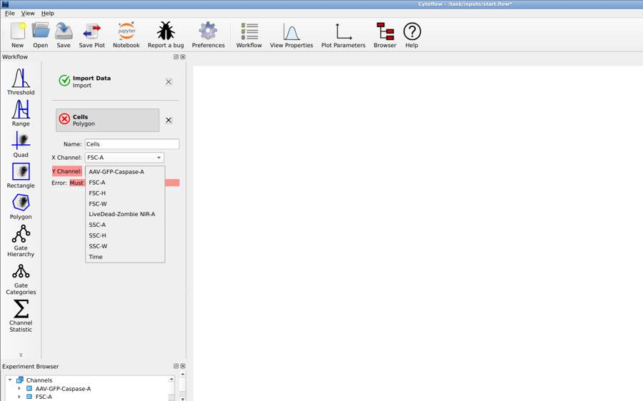
cu click 217 504; sleep 20; cu screenshot /tmp/screen.png
{
"file_path": "/tmp/screen.png"
}/tmp/screen.png
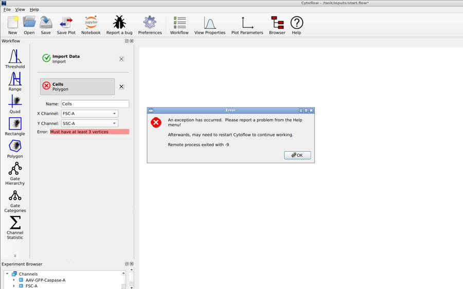
free -m; ps aux --sort=-rss | head -8; nproc; dmesg 2>/dev/null | tail -5; cat /sys/fs/cgroup/memory.max 2>/dev/null; cat /sys/fs/cgroup/memory.events 2>/dev/null
Exit code 1
total used free shared buff/cache available
Mem: 7949 987 6871 16 351 6962
Swap: 0 0 0
USER PID %CPU %MEM VSZ RSS TTY STAT START TIME COMMAND
cfapp 838 2.6 5.5 3647840 450112 ? Sl 19:07 0:04 /opt/cytoflow/cytoflow-1.3.2/cytoflow
root 1022 1.7 2.4 5688524 195664 ? Sl 19:08 0:02 claude --verbose --output-format=stream-json --effort high --model claude-fable-5-2 --permission-mode=bypassPermissions --print
root 815 0.1 0.4 236908 38320 ? S 19:07 0:00 Xvfb :1 -screen 0 1440x900x24 -nolisten tcp
root 824 0.0 0.2 58956 23188 ? S 19:07 0:00 /usr/bin/python3 /usr/bin/websockify --web=/usr/share/novnc 6080 localhost:5900
cfapp 859 0.0 0.2 84344 22088 ? S 19:08 0:00 /opt/cytoflow/cytoflow-1.3.2/cytoflow -B -S -I -c from multiprocessing.resource_tracker import main;main(9)
cfapp 928 0.0 0.1 5239700 14296 ? Sl 19:08 0:00 /opt/cytoflow/cytoflow-1.3.2/_internal/PyQt5/Qt5/libexec/QtWebEngineProcess --type=zygote --application-name=cytoflow --webengine-schemes=qrc:sLV --lang=en
agent 834 0.1 0.1 142584 11100 ? Sl 19:07 0:00 openbox
4
[ 147.465230] [ 1022] 0 1022 1422131 35595 35593 2 0 1036288 0 0 claude
[ 147.465292] [ 1177] 0 1177 1224 93 91 2 0 49152 0 0 bash
[ 147.465343] [ 1181] 0 1181 784 29 28 1 0 45056 0 0 sleep
[ 147.465406] oom-kill:constraint=CONSTRAINT_NONE,nodemask=(null),cpuset=/,mems_allowed=0,global_oom,task_memcg=/,task=cytoflow,pid=861,uid=1002
[ 147.465509] Out of memory: Killed process 861 (cytoflow) total-vm:8924420kB, anon-rss:7254876kB, file-rss:8kB, shmem-rss:28kB, UID:1002 pgtables:14860kB oom_score_adj:0cu click 925 483; sleep 1; ps -ef | grep -v claude | head -40; cat /proc/838/environ | tr '\0' '\n' | head -30
UID PID PPID C STIME TTY TIME CMD root 1 0 0 19:07 ? 00:00:00 /__modal/runch-agent root 2 0 0 19:07 ? 00:00:00 [kthreadd] root 3 2 0 19:07 ? 00:00:00 [pool_workqueue_release] root 4 2 0 19:07 ? 00:00:00 [kworker/R-rcu_gp] root 5 2 0 19:07 ? 00:00:00 [kworker/R-sync_wq] root 6 2 0 19:07 ? 00:00:00 [kworker/R-kvfree_rcu_reclaim] root 7 2 0 19:07 ? 00:00:00 [kworker/R-slub_flushwq] root 8 2 0 19:07 ? 00:00:00 [kworker/R-netns] root 9 2 0 19:07 ? 00:00:00 [kworker/0:0-events] root 10 2 0 19:07 ? 00:00:00 [kworker/0:0H-kblockd] root 11 2 0 19:07 ? 00:00:00 [kworker/0:1-mm_percpu_wq] root 12 2 0 19:07 ? 00:00:00 [kworker/u16:0-events_unbound] root 13 2 0 19:07 ? 00:00:00 [kworker/R-mm_percpu_wq] root 14 2 0 19:07 ? 00:00:00 [ksoftirqd/0] root 15 2 0 19:07 ? 00:00:00 [rcu_sched] root 16 2 0 19:07 ? 00:00:00 [rcu_exp_par_gp_kthread_worker/0] root 17 2 0 19:07 ? 00:00:00 [rcu_exp_gp_kthread_worker] root 18 2 0 19:07 ? 00:00:00 [migration/0] root 19 2 0 19:07 ? 00:00:00 [cpuhp/0] root 20 2 0 19:07 ? 00:00:00 [cpuhp/1] root 21 2 0 19:07 ? 00:00:00 [migration/1] root 22 2 0 19:07 ? 00:00:00 [ksoftirqd/1] root 23 2 0 19:07 ? 00:00:00 [kworker/1:0-slub_flushwq] root 24 2 0 19:07 ? 00:00:00 [kworker/1:0H-kblockd] root 25 2 0 19:07 ? 00:00:00 [cpuhp/2] root 26 2 0 19:07 ? 00:00:00 [migration/2] root 27 2 0 19:07 ? 00:00:00 [ksoftirqd/2] root 28 2 0 19:07 ? 00:00:00 [kworker/2:0-events] root 29 2 0 19:07 ? 00:00:00 [kworker/2:0H-kblockd] root 30 2 0 19:07 ? 00:00:00 [cpuhp/3] root 31 2 0 19:07 ? 00:00:00 [migration/3] root 32 2 0 19:07 ? 00:00:00 [ksoftirqd/3] root 33 2 0 19:07 ? 00:00:00 [kworker/3:0-mm_percpu_wq] root 34 2 0 19:07 ? 00:00:00 [kworker/3:0H-kblockd] root 36 2 0 19:07 ? 00:00:00 [kworker/u16:1-events_unbound] root 37 2 0 19:07 ? 00:00:00 [kworker/u16:2-ext4-rsv-conversion] root 38 2 0 19:07 ? 00:00:00 [kworker/u16:3-events_unbound] root 39 2 0 19:07 ? 00:00:00 [kdevtmpfs] root 40 2 0 19:07 ? 00:00:00 [kworker/R-inet_frag_wq] MODAL_IMAGE_ID=im-H6GQEPVLHWnxvLDmVREK5O QT_XKB_CONFIG_ROOT=/usr/share/X11/xkb NODE_OPTIONS=--dns-result-order=ipv4first PYTHONHASHSEED=0 OFFLINE=0 MODAL_SANDBOX_ID=sb-01M73DRA6EP51096Z1JRSE5Y69 SCREEN_GEOMETRY=1440x900x24 MODAL_CLOUD_PROVIDER=CLOUD_PROVIDER_UNSPECIFIED PWD=/task SOURCE_DATE_EPOCH=1641013200 LOGNAME=cfapp ORT_INTER_OP_NUM_THREADS=4 OPENBLAS_NUM_THREADS=4 ORT_INTRA_OP_NUM_THREADS=4 HOME=/home/cfapp LANG=C.UTF-8 MODAL_REGION=us-east SSL_CERT_DIR=/etc/ssl/certs PIP_DEFAULT_TIMEOUT=30 UV_BREAK_SYSTEM_PACKAGES=1 PYTHONPATH=/pkg/:/root/ TERM=xterm XLOCALEDIR=/usr/share/X11/locale USER=cfapp DISPLAY=:1 SHLVL=2 PIP_ROOT_USER_ACTION=ignore MODAL_CONTAINER_ARGUMENTS_PATH=/__modal/.container-arguments/data.bin XDG_RUNTIME_DIR=/tmp/runtime-cfapp BLIS_NUM_THREADS=4
ps -ef | grep -E "cytoflow|cfapp|start|supervis|sh " | grep -v grep | grep -v claude; ls / /opt /home 2>/dev/null; ls -la /task/outputs; id
root 809 1 0 19:07 ? 00:00:00 /usr/bin/tini -- /entrypoint.sh sh -c sleep infinity root 810 809 0 19:07 ? 00:00:00 /bin/bash /entrypoint.sh sh -c sleep infinity root 822 810 0 19:07 ? 00:00:00 /bin/bash /entrypoint.sh sh -c sleep infinity root 829 810 0 19:07 ? 00:00:00 /bin/bash /entrypoint.sh sh -c sleep infinity root 830 829 0 19:07 ? 00:00:00 runuser -u cfapp -- env DISPLAY=:1 HOME=/home/cfapp XDG_RUNTIME_DIR=/tmp/runtime-cfapp LANG=C.UTF-8 LC_ALL=C.UTF-8 bash -c umask 002; cd /task; exec start-cytoflow cfapp 833 830 0 19:07 ? 00:00:00 /bin/bash /usr/local/bin/start-cytoflow cfapp 838 833 2 19:07 ? 00:00:04 /opt/cytoflow/cytoflow-1.3.2/cytoflow cfapp 859 838 0 19:08 ? 00:00:00 /opt/cytoflow/cytoflow-1.3.2/cytoflow -B -S -I -c from multiprocessing.resource_tracker import main;main(9) cfapp 888 838 0 19:08 ? 00:00:00 /opt/cytoflow/cytoflow-1.3.2/_internal/PyQt5/Qt5/libexec/QtWebEngineProcess --type=zygote --no-zygote-sandbox --application-name=cytoflow --webengine-schemes=qrc:sLV --lang=en cfapp 909 838 0 19:08 ? 00:00:00 /opt/cytoflow/cytoflow-1.3.2/_internal/PyQt5/Qt5/libexec/QtWebEngineProcess --type=zygote --application-name=cytoflow --webengine-schemes=qrc:sLV --lang=en cfapp 911 909 0 19:08 ? 00:00:00 /opt/cytoflow/cytoflow-1.3.2/_internal/PyQt5/Qt5/libexec/QtWebEngineProcess --type=zygote --application-name=cytoflow --webengine-schemes=qrc:sLV --lang=en cfapp 928 911 0 19:08 ? 00:00:00 /opt/cytoflow/cytoflow-1.3.2/_internal/PyQt5/Qt5/libexec/QtWebEngineProcess --type=zygote --application-name=cytoflow --webengine-schemes=qrc:sLV --lang=en /: __modal bin bin.usr-is-merged boot dev entrypoint.sh etc home installed-agent lib lib.usr-is-merged lib64 logs media mnt opt proc root run sbin sbin.usr-is-merged srv sys task tmp usr var /home: agent cfapp ubuntu /opt: cytoflow total 8 drwxrwsrwx 2 agent task 4096 Nov 5 00:07 . drwxr-xr-x 4 root root 4096 Nov 5 00:07 .. uid=0(root) gid=0(root) groups=0(root)
cat /usr/local/bin/start-cytoflow; cat /entrypoint.sh
#!/bin/bash
# Launch Cytoflow full-screen-ish; restart it if the agent closes it.
BIN=$(find /opt/cytoflow -maxdepth 3 -type f -name 'cytoflow' -perm -u+x | head -1)
[ -z "$BIN" ] && { echo "cytoflow binary not found under /opt/cytoflow"; exit 1; }
while true; do
"$BIN" >/tmp/cytoflow.log 2>&1
sleep 1
done
#!/bin/bash
# Starts: virtual screen -> window manager -> VNC/noVNC (for human viewing) -> Cytoflow.
set -e
# Locale must reach the GUI process explicitly (Modal does not propagate image ENV through runuser);
# without it Qt pops "failed to create compose table" and swallows keystrokes.
export LANG=C.UTF-8 LC_ALL=C.UTF-8
if [ "${OFFLINE:-1}" = "1" ]; then
# Block all outbound traffic except replies to inbound connections (so noVNC viewing still works).
if iptables -P OUTPUT DROP 2>/dev/null; then
iptables -A OUTPUT -o lo -j ACCEPT
iptables -A OUTPUT -m state --state ESTABLISHED,RELATED -j ACCEPT
echo "[env] offline mode: outbound network blocked"
else
echo "[env] WARNING: could not block network (run with --cap-add NET_ADMIN)"
fi
fi
# Bind-mounted outputs folder: make it writable by both the agent and the Cytoflow user.
chown agent:task /task/outputs 2>/dev/null; chmod 2777 /task/outputs 2>/dev/null || true
as_agent() { runuser -u agent -- env DISPLAY=$DISPLAY HOME=/home/agent LANG=$LANG LC_ALL=$LC_ALL "$@"; }
Xvfb $DISPLAY -screen 0 $SCREEN_GEOMETRY -nolisten tcp &
for i in $(seq 1 50); do xdpyinfo -display $DISPLAY >/dev/null 2>&1 && break; sleep 0.2; done
as_agent openbox &
x11vnc -display $DISPLAY -forever -shared -nopw -quiet -rfbport 5900 &
websockify --web=/usr/share/novnc 6080 localhost:5900 >/dev/null 2>&1 &
echo "[env] watch the screen at http://localhost:6080/vnc.html?autoconnect=1&resize=scale"
as_cfapp() { runuser -u cfapp -- env DISPLAY=$DISPLAY HOME=/home/cfapp XDG_RUNTIME_DIR=/tmp/runtime-cfapp LANG=$LANG LC_ALL=$LC_ALL "$@"; }
mkdir -p /tmp/runtime-cfapp && chown cfapp /tmp/runtime-cfapp && chmod 700 /tmp/runtime-cfapp
# umask 002: files Cytoflow saves into /task/outputs stay readable/writable by the agent.
# cd /task: Cytoflow's open/save dialogs start in the task folder.
as_cfapp bash -c "umask 002; cd /task; exec start-cytoflow" &
waittail -20 /tmp/cytoflow.log; kill 838; sleep 12; cu screenshot /tmp/screen.png; free -m | head -2
{
"file_path": "/tmp/screen.png"
}QXcbIntegration: Cannot create platform OpenGL context, neither GLX nor EGL are enabled
2026-11-10 19:10:27,498 ERROR:root:Remote process exited with -9
/tmp/screen.png
total used free shared buff/cache available
Mem: 7949 1224 6132 15 853 6725
cu click 916 493; sleep 1; cu click 90 75; sleep 2; cu click 1038 744; cu paste "/task/inputs/start.flow"; sleep 0.5; cu key Return; sleep 3; cu click 747 449; sleep 45; cu click 652 75; sleep 2; cu screenshot /tmp/screen.png
{
"file_path": "/tmp/screen.png"
}/tmp/screen.png
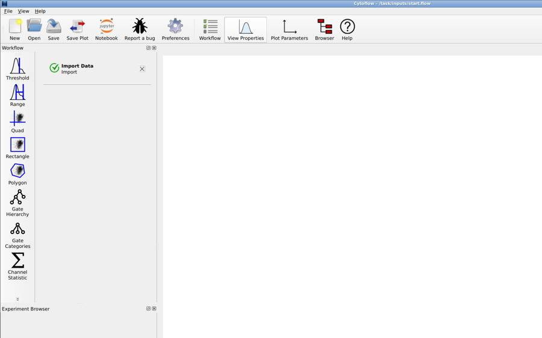
export DISPLAY=:1; for w in $(xdotool search --onlyvisible --name "Cytoflow"); do xdotool getwindowname $w; xdotool getwindowgeometry $w; done
Cytoflow - /task/inputs/start.flow Window 14680070 Position: 2,40 (screen: 0) Geometry: 2082x1171
export DISPLAY=:1; xdotool windowmove 14680070 0 0; xdotool windowsize 14680070 1440 880; sleep 2; xdotool getwindowgeometry 14680070; cu screenshot /tmp/screen.png
{
"file_path": "/tmp/screen.png"
}Window 14680070 Position: 1,20 (screen: 0) Geometry: 1440x880 /tmp/screen.png
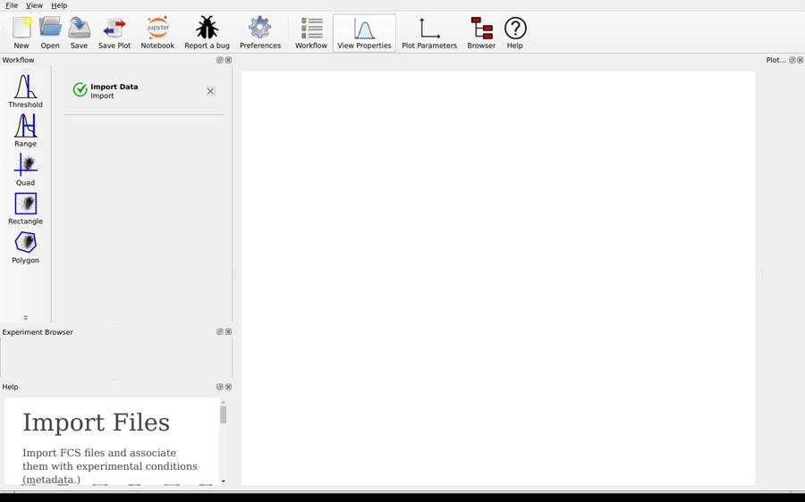
export DISPLAY=:1; xdotool windowmove 14680070 0 20; xdotool windowsize 14680070 1440 878; sleep 1; cu screenshot /tmp/screen.png
{
"file_path": "/tmp/screen.png"
}/tmp/screen.png
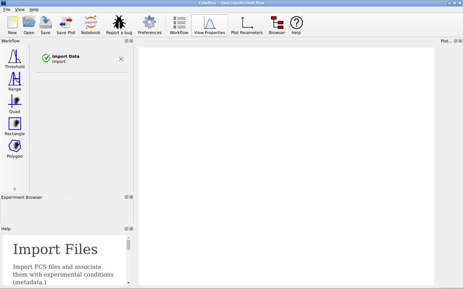
cu click 408 712; sleep 0.5; cu click 408 613; sleep 0.5; cu drag 1364 510 1060 510; sleep 1; cu click 240 182; sleep 2; cu screenshot /tmp/screen.png
{
"file_path": "/tmp/screen.png"
}/tmp/screen.png
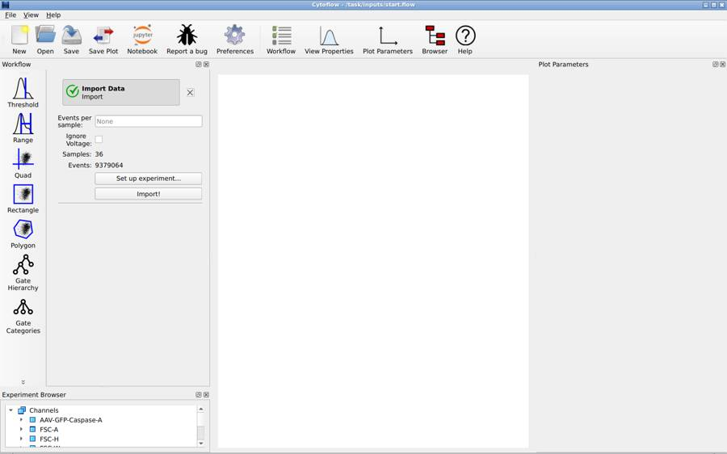
cu click 652 75; sleep 2; cu screenshot /tmp/screen.png
{
"file_path": "/tmp/screen.png"
}/tmp/screen.png
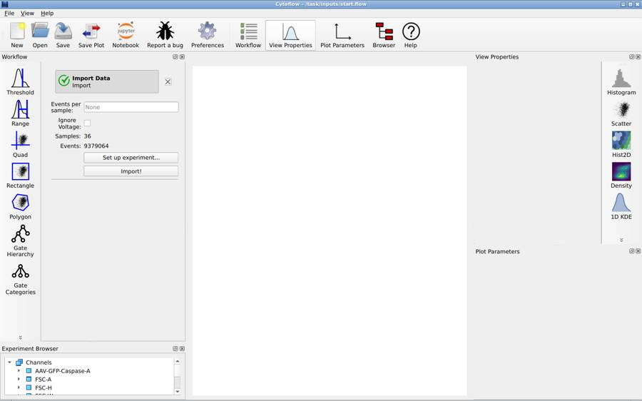
cu click 46 462; sleep 2; cu click 295 323; cu type "Cells"; cu key Tab; sleep 1; cu screenshot /tmp/screen.png
{
"file_path": "/tmp/screen.png"
}/tmp/screen.png
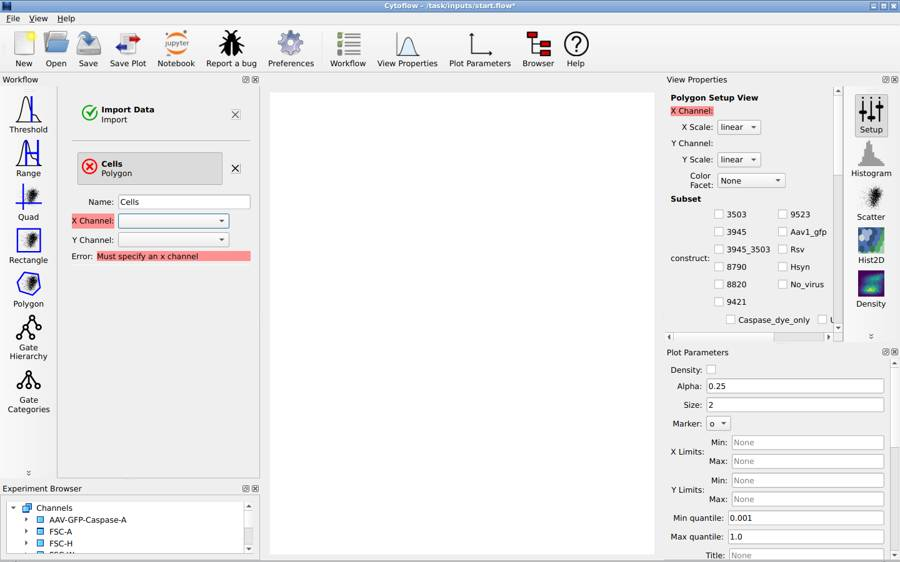
cu click 1138 592; sleep 1; cu click 278 354; sleep 1; cu click 217 378; sleep 1; cu click 278 384; sleep 1; cu click 217 504; sleep 25; cu screenshot /tmp/screen.png; free -m | head -2
{
"file_path": "/tmp/screen.png"
}/tmp/screen.png
total used free shared buff/cache available
Mem: 7949 957 6967 15 284 6992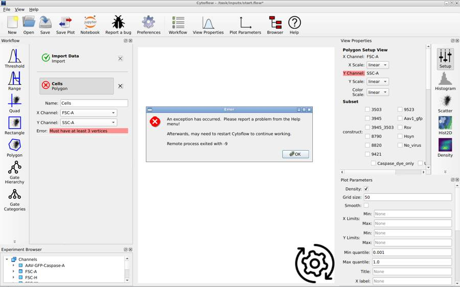
cat > /tmp/restart.sh <<'EOF'
#!/bin/bash
# restart cytoflow and reload a workflow file ($1), answer Yes to run
export DISPLAY=:1
F=${1:-/task/inputs/start.flow}
pkill -f /opt/cytoflow/cytoflow-1.3.2/cytoflow
sleep 12
cu click 916 493; sleep 1 # welcome OK
W=$(xdotool search --onlyvisible --name "Cytoflow" | tail -1)
xdotool windowmove $W 0 20; xdotool windowsize $W 1440 878; sleep 2
cu click 90 75; sleep 2
cu screenshot /tmp/dlg.png
EOF
chmod +x /tmp/restart.sh; /tmp/restart.shExit code 144
{
"file_path": "/tmp/dlg.png"
}File does not exist. Note: your current working directory is /task.
cat > /tmp/restart.sh <<'EOF' #!/bin/bash export DISPLAY=:1 PID=$(pgrep -u cfapp -o -x cytoflow) kill $PID sleep 14 cu click 916 493; sleep 1 # welcome OK W=$(xdotool search --onlyvisible --name "Cytoflow" | tail -1) xdotool windowmove $W 0 20; xdotool windowsize $W 1440 878; sleep 2 cu click 90 75; sleep 2 cu screenshot /tmp/dlg.png EOF /tmp/restart.sh; pgrep -u cfapp -a cytoflow | head
{
"file_path": "/tmp/dlg.png"
}/tmp/dlg.png 833 /bin/bash /usr/local/bin/start-cytoflow 859 [cytoflow] <defunct> 1242 [cytoflow] <defunct> 1498 /opt/cytoflow/cytoflow-1.3.2/cytoflow 1509 /opt/cytoflow/cytoflow-1.3.2/cytoflow -B -S -I -c from multiprocessing.resource_tracker import main;main(9) 1511 /opt/cytoflow/cytoflow-1.3.2/cytoflow --multiprocessing-fork tracker_fd=10 pipe_handle=14
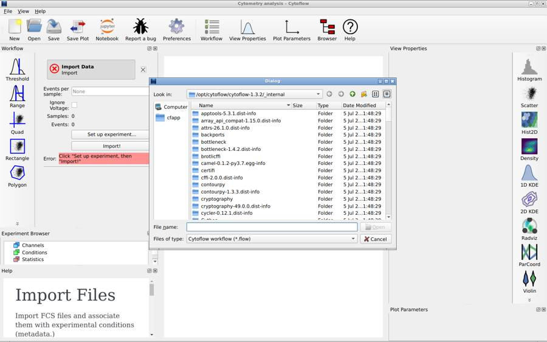
cu click 715 597; cu paste "/task/inputs/start.flow"; sleep 0.5; cu key Return; sleep 3; cu screenshot /tmp/screen.png
{
"file_path": "/tmp/screen.png"
}/tmp/screen.png
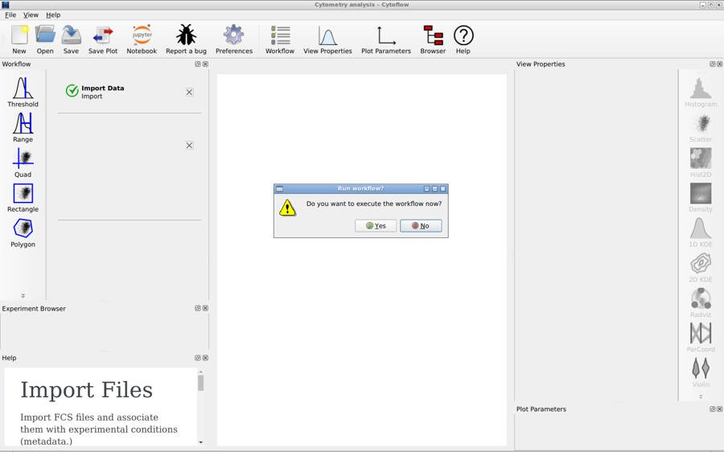
cu click 747 449; for i in 1 2 3 4 5 6 7 8 9 10; do sleep 5; ps -u cfapp -o pid,rss,cmd --sort=-rss | head -3 | cut -c1-80; done; cu click 408 712; sleep 0.5; cu click 408 613; sleep 1; cu screenshot /tmp/screen.png
PID RSS CMD 1511 1396512 /opt/cytoflow/cytoflow-1.3.2/cytoflow --multiprocessing-fork track 1498 526200 /opt/cytoflow/cytoflow-1.3.2/cytoflow PID RSS CMD 1511 1792216 /opt/cytoflow/cytoflow-1.3.2/cytoflow --multiprocessing-fork track 1498 527808 /opt/cytoflow/cytoflow-1.3.2/cytoflow PID RSS CMD 1511 1792216 /opt/cytoflow/cytoflow-1.3.2/cytoflow --multiprocessing-fork track 1498 527808 /opt/cytoflow/cytoflow-1.3.2/cytoflow PID RSS CMD 1511 1792216 /opt/cytoflow/cytoflow-1.3.2/cytoflow --multiprocessing-fork track 1498 527808 /opt/cytoflow/cytoflow-1.3.2/cytoflow PID RSS CMD 1511 1792216 /opt/cytoflow/cytoflow-1.3.2/cytoflow --multiprocessing-fork track 1498 527760 /opt/cytoflow/cytoflow-1.3.2/cytoflow PID RSS CMD 1511 1792216 /opt/cytoflow/cytoflow-1.3.2/cytoflow --multiprocessing-fork track 1498 527760 /opt/cytoflow/cytoflow-1.3.2/cytoflow PID RSS CMD 1511 1792216 /opt/cytoflow/cytoflow-1.3.2/cytoflow --multiprocessing-fork track 1498 527760 /opt/cytoflow/cytoflow-1.3.2/cytoflow PID RSS CMD 1511 1792216 /opt/cytoflow/cytoflow-1.3.2/cytoflow --multiprocessing-fork track 1498 527760 /opt/cytoflow/cytoflow-1.3.2/cytoflow PID RSS CMD 1511 1792216 /opt/cytoflow/cytoflow-1.3.2/cytoflow --multiprocessing-fork track 1498 527748 /opt/cytoflow/cytoflow-1.3.2/cytoflow PID RSS CMD 1511 1792216 /opt/cytoflow/cytoflow-1.3.2/cytoflow --multiprocessing-fork track 1498 527748 /opt/cytoflow/cytoflow-1.3.2/cytoflow /tmp/screen.png
{
"file_path": "/tmp/screen.png"
}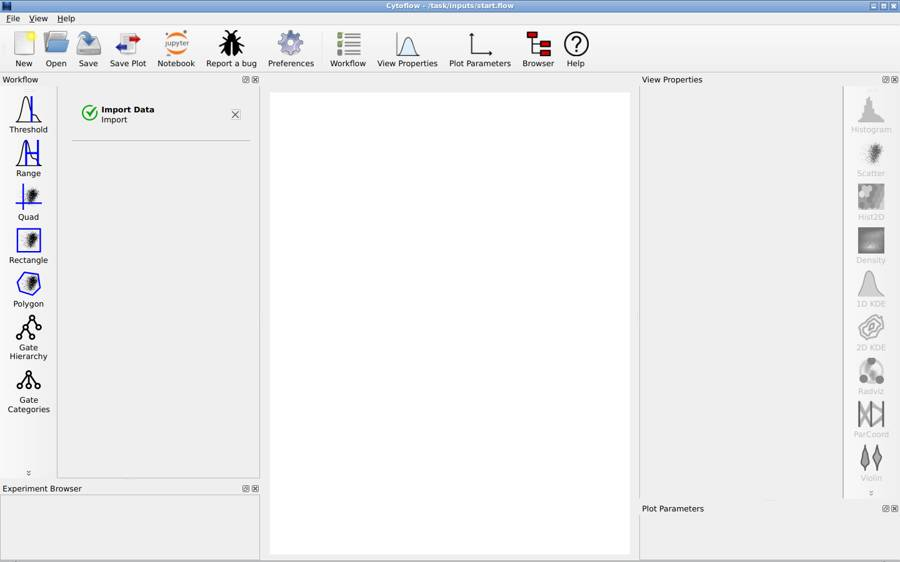
cu drag 1232 801 1232 560; sleep 1; cu click 46 462; sleep 2; cu click 295 323; cu type "Cells"; cu key Tab; sleep 1; cu scroll 1180 400 down 5; sleep 1; cu screenshot /tmp/screen.png
{
"file_path": "/tmp/screen.png"
}/tmp/screen.png
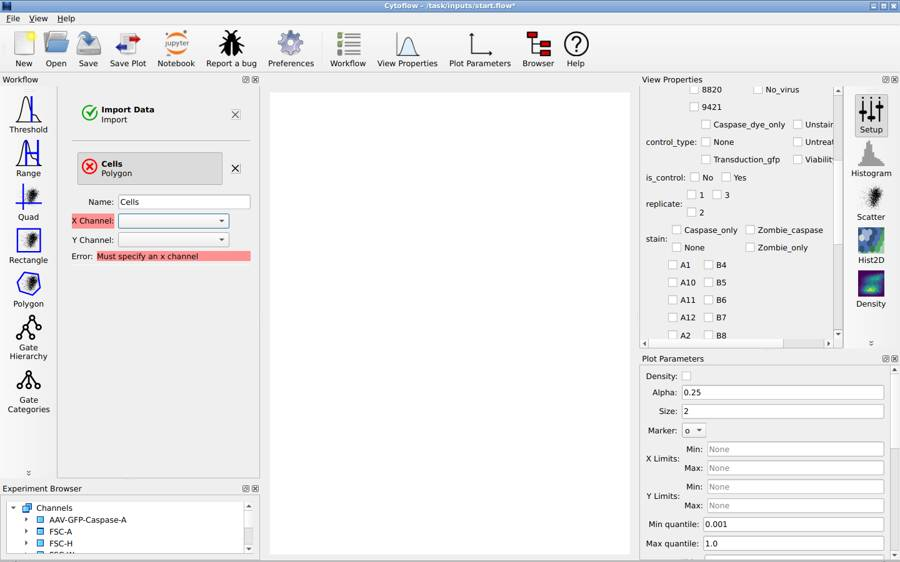
cu click 1213 144; sleep 1; cu click 1098 602; sleep 1; cu click 278 354; sleep 1; cu click 217 378; sleep 1; cu click 278 384; sleep 1; cu click 217 504; for i in 1 2 3 4 5 6; do sleep 3; ps -u cfapp -o rss --sort=-rss | sed -n 2p; done; cu screenshot /tmp/screen.png
{
"file_path": "/tmp/screen.png"
}1792728 2995004 1824324 1824324 1824324 1824324 /tmp/screen.png
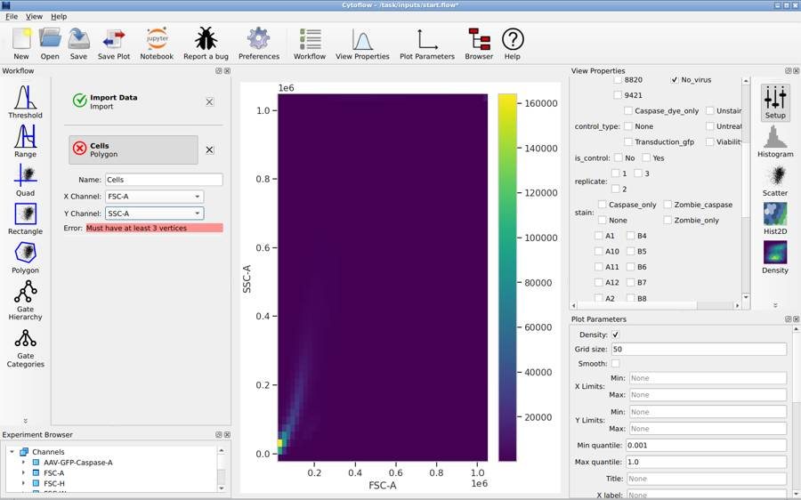
cu scroll 1180 400 up 10; sleep 1; cu click 1140 204; sleep 1; cu screenshot /tmp/screen.png
{
"file_path": "/tmp/screen.png"
}/tmp/screen.png
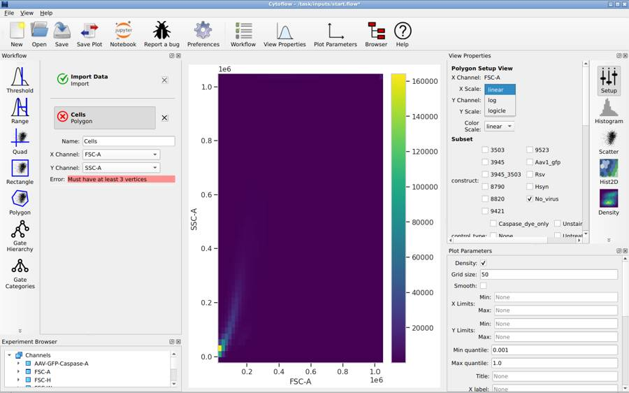
cu click 1127 229; sleep 6; cu click 1140 256; sleep 1; cu screenshot /tmp/s1.png;
{
"file_path": "/tmp/s1.png"
}/tmp/s1.png
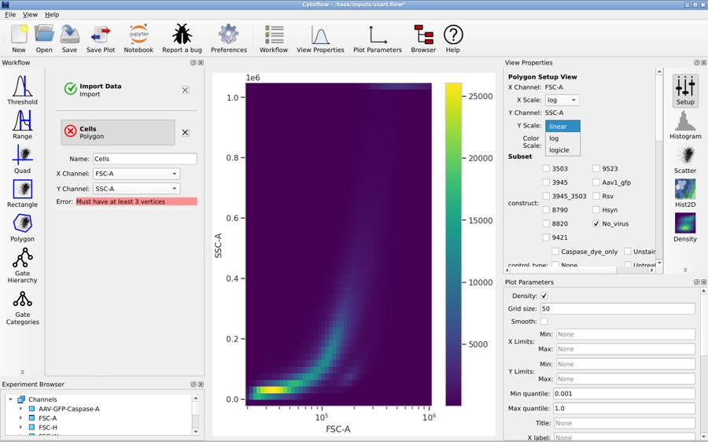
cu click 1127 282; sleep 6; cu click 1140 290; sleep 1; cu screenshot /tmp/s1.png;
{
"file_path": "/tmp/s1.png"
}/tmp/s1.png
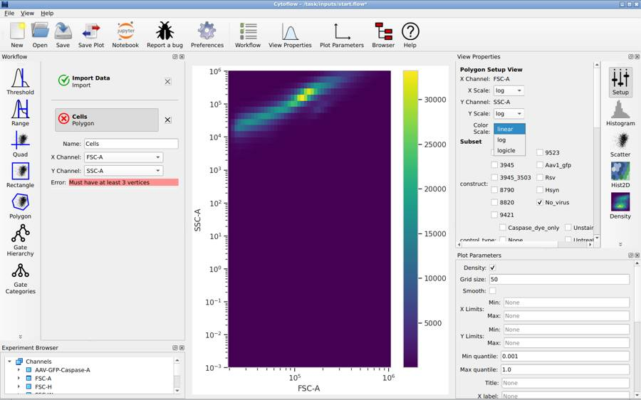
cu click 1127 315; sleep 6; cu click 1270 741; cu type "1000"; cu key Tab; sleep 8; cu screenshot /tmp/s1.png;
{
"file_path": "/tmp/s1.png"
}/tmp/s1.png
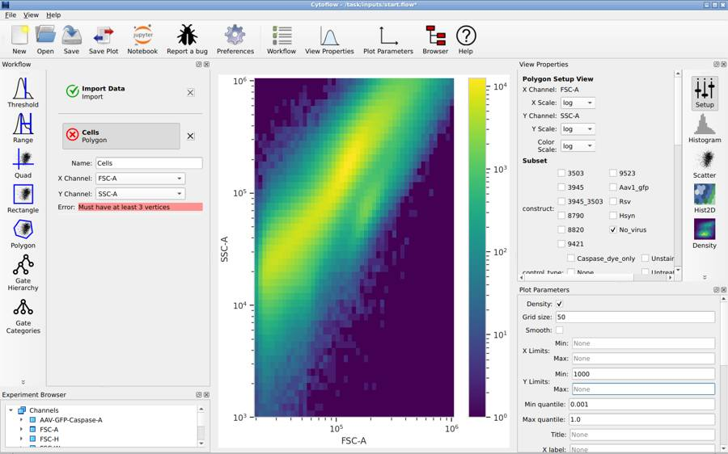
cu click 1270 741 ; cu key ctrl+a; cu key BackSpace; cu key Tab; sleep 6; cu click 1255 628; cu key ctrl+a; cu type "100"; cu key Tab; sleep 6; cu click 1140 204; sleep 1; cu click 1127 205; sleep 6; cu click 1140 256; sleep 1; cu click 1127 257; sleep 8; cu screenshot /tmp/s1.png;
{
"file_path": "/tmp/s1.png"
}/tmp/s1.png
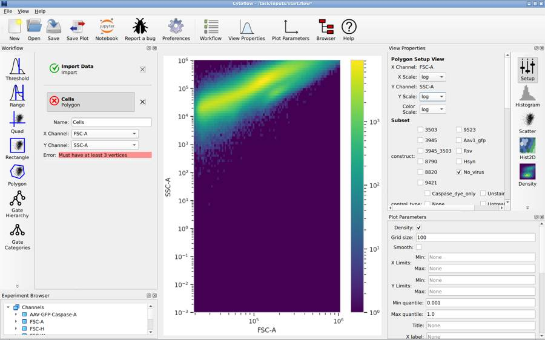
cu click 1140 204; sleep 1; cu screenshot /tmp/s1.png
{
"file_path": "/tmp/s1.png"
}/tmp/s1.png
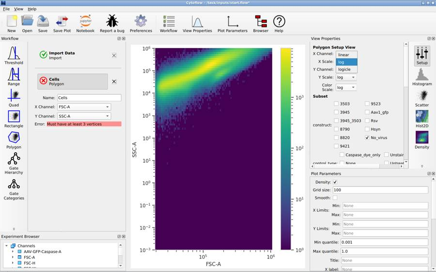
cu click 1135 181; sleep 6; cu click 1140 256; sleep 1; cu click 1135 232; sleep 8; cu screenshot /tmp/s1.png;
{
"file_path": "/tmp/s1.png"
}/tmp/s1.png
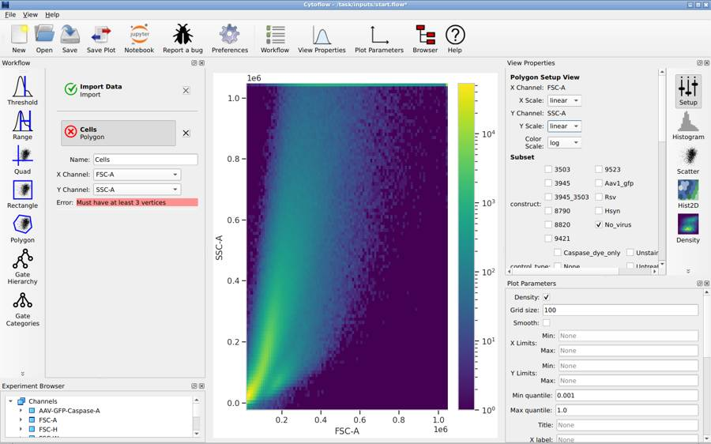
cu click 1140 204; sleep 1; cu click 1127 228; sleep 6; cu click 1140 256; sleep 1; cu click 1127 280; sleep 6; cu click 1140 290; sleep 1; cu click 1135 266; sleep 6; cu click 1270 741; cu type "3000"; cu key Tab; sleep 8; cu screenshot /tmp/s1.png;
{
"file_path": "/tmp/s1.png"
}/tmp/s1.png
for p in "585 440" "650 500" "760 440" "860 300" "870 175" "720 172"; do cu click $p; sleep 1.2; done; cu click 640 250 double; sleep 10; cu screenshot /tmp/s1.png; ps -u cfapp -o rss --sort=-rss | sed -n 2p
{
"file_path": "/tmp/s1.png"
}/tmp/s1.png 1834836
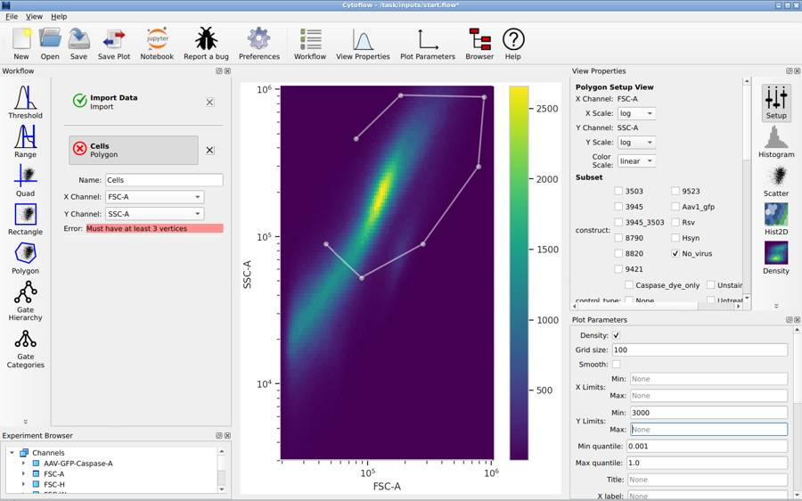
export DISPLAY=:1; xdotool mousemove 586 439; sleep 0.5; xdotool click --repeat 2 --delay 120 1; sleep 12; cu screenshot /tmp/s1.png; ps -u cfapp -o rss --sort=-rss | sed -n 2p
{
"file_path": "/tmp/s1.png"
}/tmp/s1.png 2670368
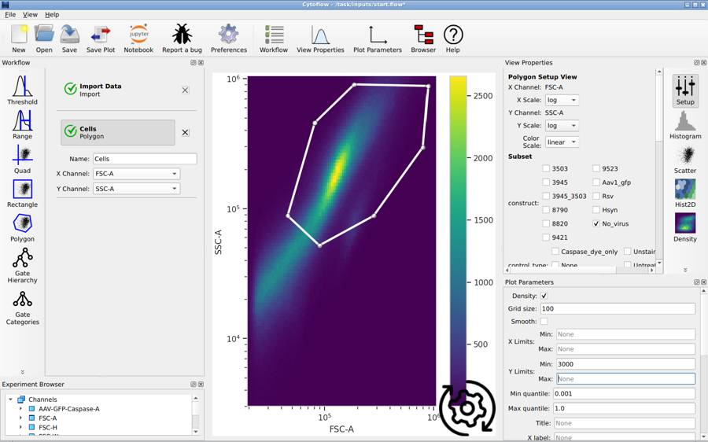
sleep 5; cu click 20 30; sleep 1; cu screenshot /tmp/s1.png; ps -u cfapp -o rss --sort=-rss | sed -n 2p
{
"file_path": "/tmp/s1.png"
}/tmp/s1.png 1822320
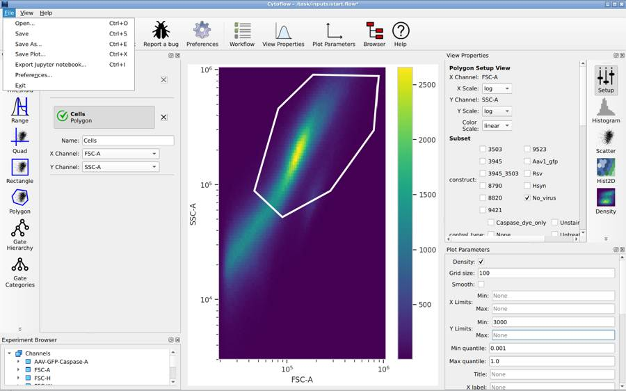
cu click 65 101; sleep 2; cu screenshot /tmp/s1.png
{
"file_path": "/tmp/s1.png"
}/tmp/s1.png
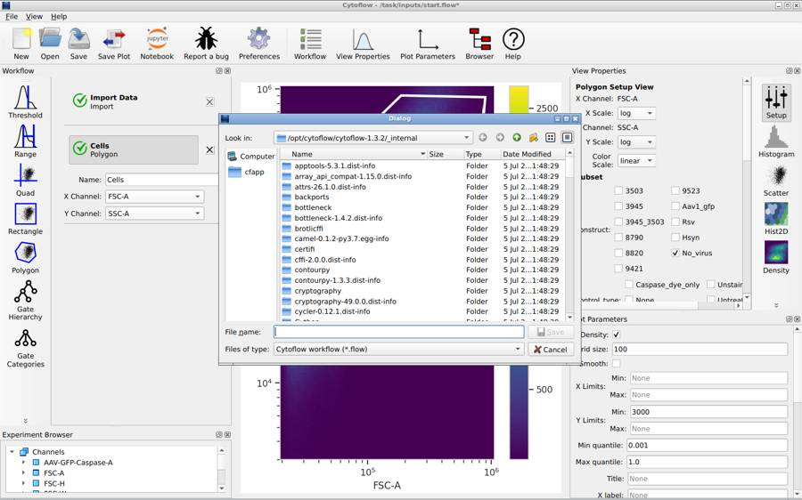
cu click 715 597; cu paste "/task/outputs/workflow.flow"; sleep 0.5; cu key Return; sleep 3; cu screenshot /tmp/s1.png; ls -la /task/outputs; grep -n -A30 "polygon" /task/outputs/workflow.flow | head -80
/tmp/s1.png total 44 drwxrwsrwx 2 agent task 4096 Nov 10 19:20 . drwxr-xr-x 4 root root 4096 Nov 5 00:07 .. -rw-rw-r-- 1 cfapp task 33157 Nov 10 19:20 workflow.flow 1163: current_view: &id002 !polygon-view;3 1164- current_plot: null 1165- huefacet: '' 1166- huescale: linear 1167: op: &id001 !polygon;1 1168- name: Cells 1169- vertices: 1170- - !!python/tuple 1171- - 45613.671923750146 1172- - 87950.87839849408 1173- - !!python/tuple 1174- - 89393.18751044801 1175- - 52000.01691214479 1176- - !!python/tuple 1177- - 282415.29721237003 1178- - 87950.87839849408 1179- - !!python/tuple 1180- - 800463.3717096916 1181- - 296173.1280933565 1182- - !!python/tuple 1183- - 892220.1156573521 1184- - 878535.8876819683 1185- - !!python/tuple 1186- - 186978.7017081543 1187- - 902744.5043300805 1188- - !!python/tuple 1189- - 81074.99515073247 1190- - 457542.24007297953 1191- - !!python/tuple 1192- - 81074.99515073247 1193- - 457542.24007297953 1194- xchannel: FSC-A 1195- xscale: log 1196- ychannel: SSC-A 1197- yscale: log 1198: plot_params: !polygon-params;1 1199- alpha: 0.25 1200- col_wrap: null 1201- density: true 1202- despine: true 1203- gridsize: 100 1204- huelabel: '' 1205- legend: true 1206- marker: o 1207- max_quantile: 1.0 1208- min_quantile: 0.001 1209- s: 2 1210- sharex: true 1211- sharey: true 1212- smoothed: false 1213- smoothed_sigma: 1.0 1214- sns_context: notebook 1215- sns_style: whitegrid 1216- title: '' 1217- xlabel: '' 1218- xlim: !!python/tuple 1219- - null 1220- - null 1221- ylabel: '' 1222- ylim: !!python/tuple 1223- - 3000.0 1224- - null 1225- subset_list: 1226- - !category-subset;1 1227- name: construct 1228- selected:
cu click 46 462; sleep 3; cu screenshot /tmp/s1.png
{
"file_path": "/tmp/s1.png"
}/tmp/s1.png
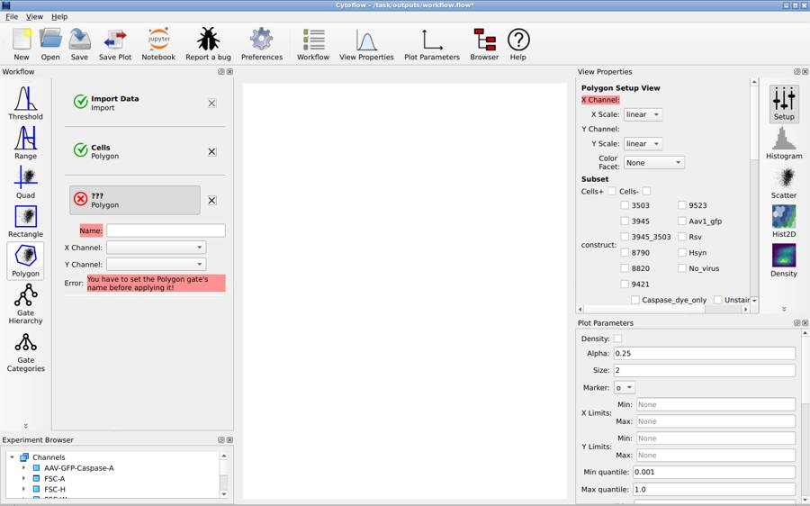
cu click 295 410; cu type "Single_Cells"; cu key Tab; sleep 1; cu click 1088 340; sleep 0.5; cu click 1213 478; sleep 0.5; cu click 1098 602; sleep 0.5; cu click 1140 204; sleep 1; cu click 1127 228; sleep 1; cu click 1140 256; sleep 1; cu click 1127 280; sleep 1; cu click 278 440; sleep 1; cu click 217 583; sleep 1; cu click 278 470; sleep 1; cu screenshot /tmp/s1.png
{
"file_path": "/tmp/s1.png"
}/tmp/s1.png
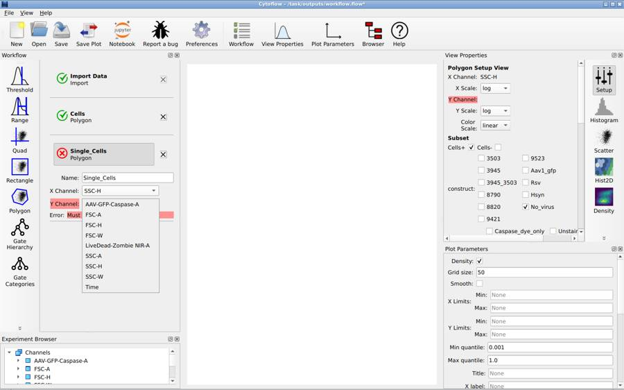
cu click 216 590; sleep 1; cu click 1255 628; cu key ctrl+a; cu type "100"; cu key Tab; sleep 12; cu screenshot /tmp/s1.png
{
"file_path": "/tmp/s1.png"
}/tmp/s1.png
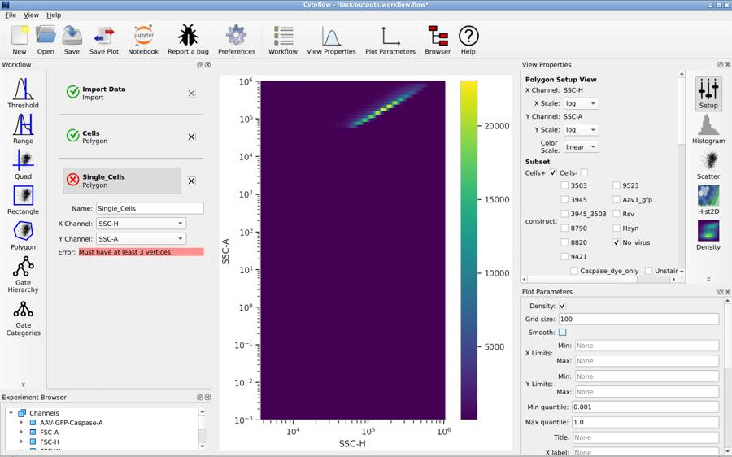
cu click 1270 680; cu type "20000"; cu key Tab; cu type "1100000"; cu key Tab; cu type "40000"; cu key Tab; cu type "1100000"; cu key Tab; sleep 2; cu click 1140 290; sleep 1; cu click 1127 314; sleep 14; cu screenshot /tmp/s1.png
{
"file_path": "/tmp/s1.png"
}/tmp/s1.png
sleep 6; cu screenshot /tmp/s1.png
{
"file_path": "/tmp/s1.png"
}/tmp/s1.png
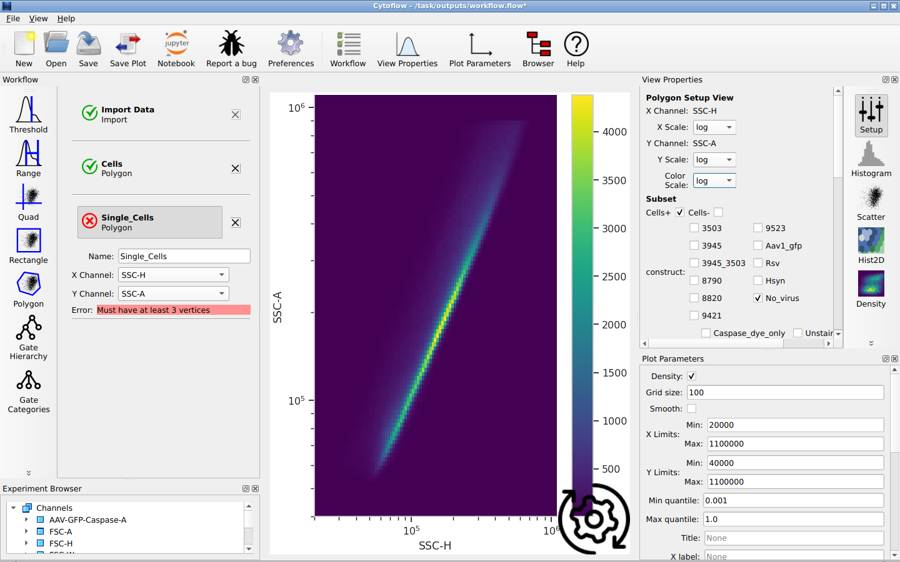
sleep 10; cu screenshot /tmp/s1.png
{
"file_path": "/tmp/s1.png"
}/tmp/s1.png
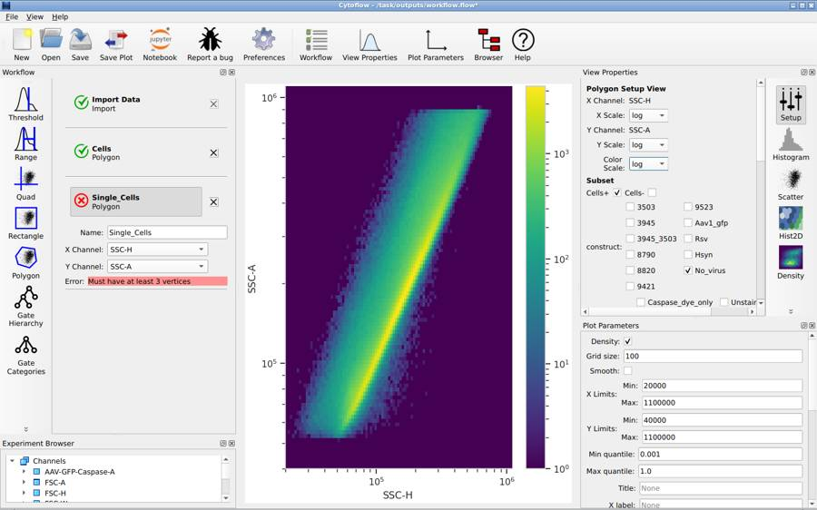
export DISPLAY=:1; for p in "570 785" "647 785" "758 500" "888 186" "832 186" "715 430"; do cu click $p; sleep 1.2; done; xdotool mousemove 625 641; sleep 0.5; xdotool click --repeat 2 --delay 120 1; sleep 25; cu screenshot /tmp/s1.png; ps -u cfapp -o rss --sort=-rss | sed -n 2p
{
"file_path": "/tmp/s1.png"
}/tmp/s1.png 1828252
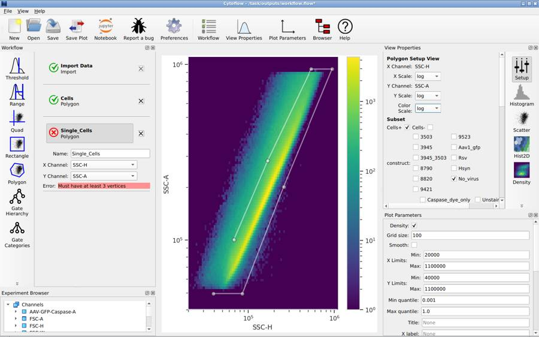
export DISPLAY=:1; xdotool mousemove 571 784; sleep 0.5; xdotool click --repeat 2 --delay 120 1; sleep 20; cu screenshot /tmp/s1.png
{
"file_path": "/tmp/s1.png"
}/tmp/s1.png
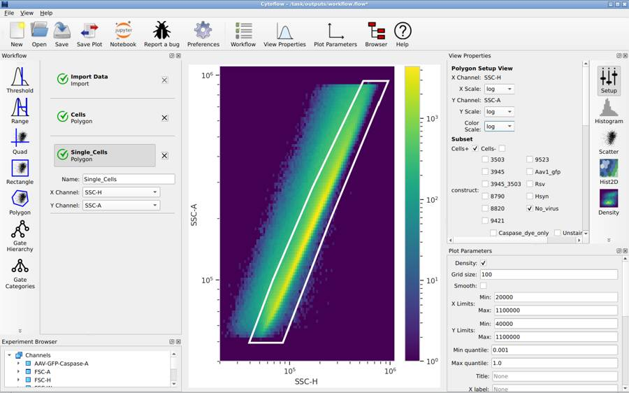
cu key ctrl+s; sleep 3; ls -la /task/outputs; cu click 46 392; sleep 3; cu screenshot /tmp/s1.png
{
"file_path": "/tmp/s1.png"
}total 56 drwxrwsrwx 2 agent task 4096 Nov 10 19:20 . drwxr-xr-x 4 root root 4096 Nov 5 00:07 .. -rw-rw-r-- 1 cfapp task 46945 Nov 10 19:24 workflow.flow /tmp/s1.png
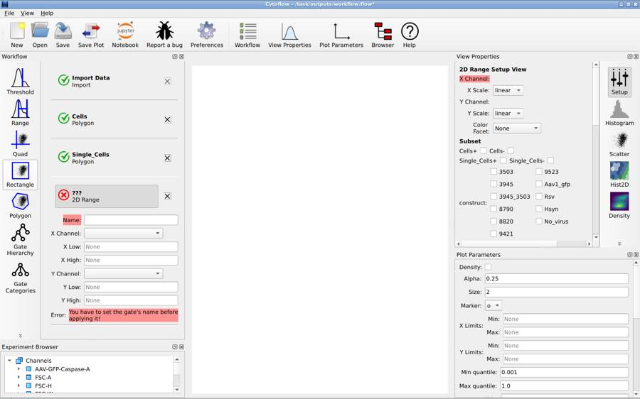
cu click 295 496; cu type "Live"; cu key Tab; sleep 1; cu click 1088 340; sleep 0.5; cu click 1133 362; sleep 0.5; cu click 1213 500; sleep 0.5; cu click 1098 602; sleep 0.5; cu click 1140 204; sleep 1; cu click 1135 252; sleep 1; cu click 1140 256; sleep 1; cu click 1135 304; sleep 1; cu click 278 526; sleep 1; cu click 250 527; sleep 1; cu click 278 617; sleep 1; cu screenshot /tmp/s1.png
{
"file_path": "/tmp/s1.png"
}/tmp/s1.png
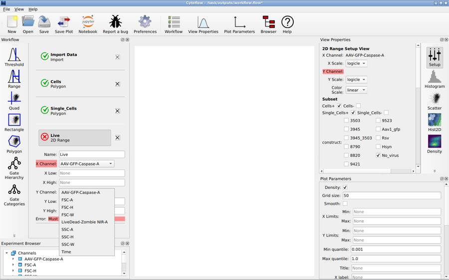
cu click 270 713; sleep 1; cu click 1255 628; cu key ctrl+a; cu type "100"; cu key Tab; sleep 20; cu screenshot /tmp/s1.png
{
"file_path": "/tmp/s1.png"
}/tmp/s1.png
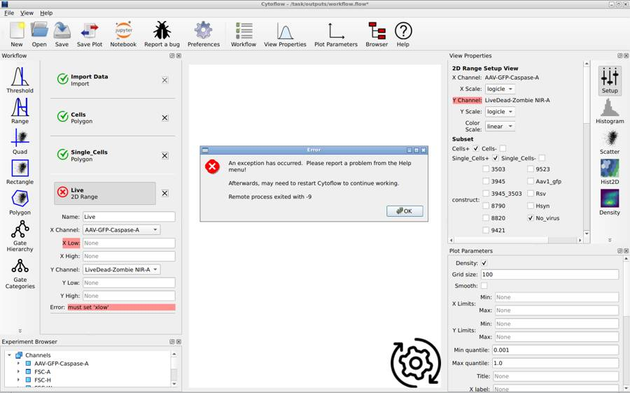
thinking
Third out-of-memory kill, this time from plotting logicle axes. I'm restarting from the saved workflow and testing logicle on one small well while watching memory.
tail -5 /tmp/cytoflow.log; dmesg | grep -i "killed process" | tail -3
cat > /tmp/restart.sh <<'EOF'
#!/bin/bash
export DISPLAY=:1
F=${1:-/task/outputs/workflow.flow}
PID=$(pgrep -u cfapp -o -x cytoflow)
kill $PID
sleep 14
cu click 916 493; sleep 1 # welcome OK
W=$(xdotool search --onlyvisible --name "Cytoflow" | tail -1)
xdotool windowmove $W 0 20; xdotool windowsize $W 1440 878; sleep 2
cu click 90 75; sleep 2
cu click 715 597; cu paste "$F"; sleep 0.5; cu key Return; sleep 3
cu click 747 449 # Yes
sleep 30
cu click 408 712; sleep 0.5 # close help
cu drag 1232 801 1232 560; sleep 1
cu screenshot /tmp/s1.png
ps -u cfapp -o rss --sort=-rss | sed -n 2p
EOF
/tmp/restart.sh{
"file_path": "/tmp/s1.png"
}QXcbIntegration: Cannot create platform OpenGL context, neither GLX nor EGL are enabled 2026-11-10 19:24:47,409 ERROR:root:Remote process exited with -9 [ 147.465509] Out of memory: Killed process 861 (cytoflow) total-vm:8924420kB, anon-rss:7254876kB, file-rss:8kB, shmem-rss:28kB, UID:1002 pgtables:14860kB oom_score_adj:0 [ 340.203667] Out of memory: Killed process 1244 (cytoflow) total-vm:8445476kB, anon-rss:7288488kB, file-rss:8kB, shmem-rss:28kB, UID:1002 pgtables:14872kB oom_score_adj:0 [ 1007.459414] Out of memory: Killed process 1511 (cytoflow) total-vm:9081192kB, anon-rss:7261960kB, file-rss:8kB, shmem-rss:28kB, UID:1002 pgtables:14864kB oom_score_adj:0 /tmp/s1.png 393244
sed -i 's/^PID=.*/PID=$(pgrep -P 833 -x cytoflow)/' /tmp/restart.sh; pgrep -P 833 -x cytoflow; /tmp/restart.sh
{
"file_path": "/tmp/s1.png"
}1498 /tmp/s1.png 2278440
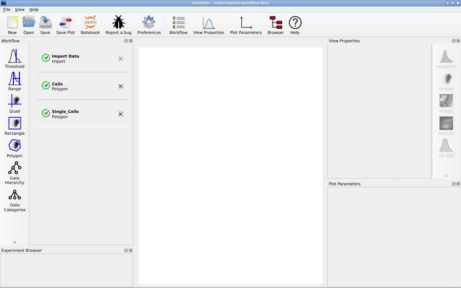
cu click 46 392; sleep 3; cu click 295 496; cu type "Live"; cu key Tab; sleep 1; cu click 1088 340; sleep 0.5; cu click 1133 362; sleep 0.5; cu click 1098 602; sleep 0.5; cu scroll 1180 450 down 10; sleep 1; cu screenshot /tmp/s1.png
{
"file_path": "/tmp/s1.png"
}/tmp/s1.png
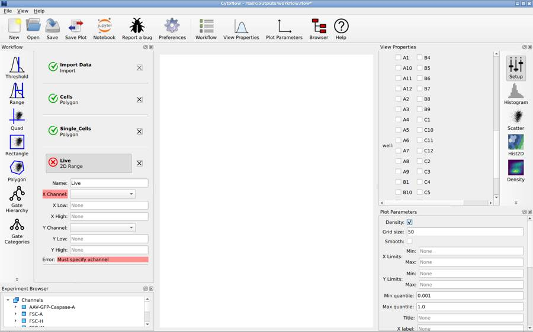
cu click 1133 352; sleep 0.5; cu click 278 526; sleep 1; cu click 250 527; sleep 1; cu click 278 617; sleep 1; cu click 270 713; for i in $(seq 1 12); do sleep 1; ps -u cfapp -o rss --sort=-rss | sed -n 2p; done; cu screenshot /tmp/s1.png
{
"file_path": "/tmp/s1.png"
}3672448 6526544 373352 386952 386952 386952 386952 386952 386960 386960 387024 387024 /tmp/s1.png
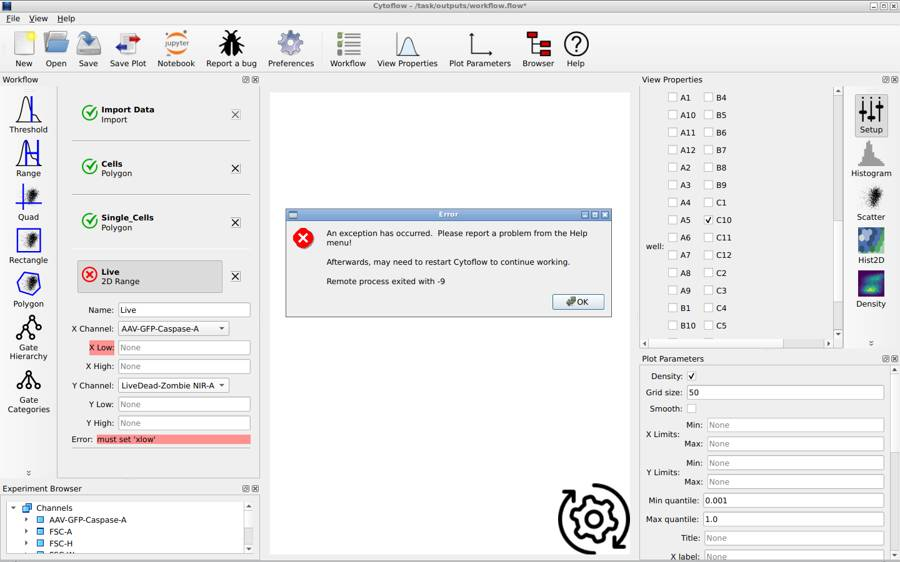
date; /tmp/restart.sh; sleep 5; ps -u cfapp -o rss --sort=-rss | sed -n 2p
Tue Nov 10 19:28:52 UTC 2026 /tmp/s1.png 2278184 2278184
cu click 240 355; sleep 3; cu click 1393 392; sleep 2; cu screenshot /tmp/s1.png
{
"file_path": "/tmp/s1.png"
}/tmp/s1.png
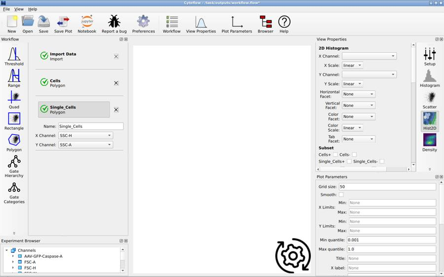
sleep 8; cu click 1393 462; sleep 3; cu click 1088 502; sleep 0.5; cu click 1133 524; sleep 0.5; cu scroll 1180 450 down 3; sleep 1; cu screenshot /tmp/s1.png
{
"file_path": "/tmp/s1.png"
}/tmp/s1.png
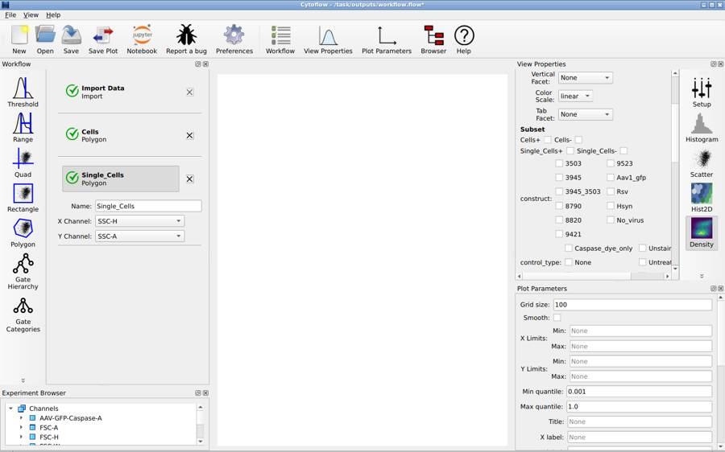
cu click 1088 279; sleep 0.5; cu click 1133 301; sleep 0.5; cu click 1213 439; sleep 0.5; cu scroll 1180 350 up 10; sleep 1; cu click 1195 183; sleep 1; cu screenshot /tmp/s1.png
{
"file_path": "/tmp/s1.png"
}/tmp/s1.png
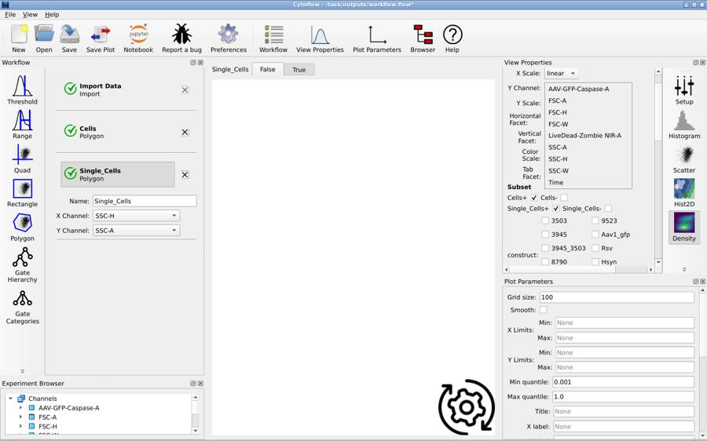
cu key Escape; sleep 1; cu scroll 1180 450 up 15; sleep 1; cu screenshot /tmp/s1.png
{
"file_path": "/tmp/s1.png"
}/tmp/s1.png
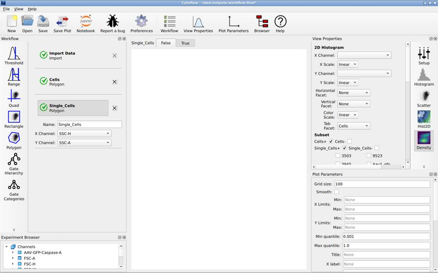
cu click 1162 416; sleep 1; cu screenshot /tmp/s1.png
{
"file_path": "/tmp/s1.png"
}/tmp/s1.png
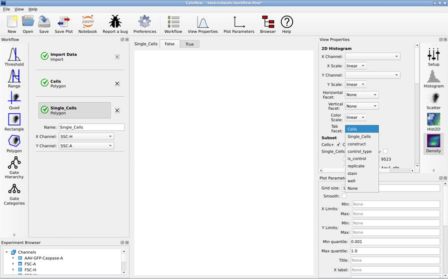
cu click 1129 583; sleep 2; cu scroll 1050 500 down 3; sleep 1; cu screenshot /tmp/s1.png
{
"file_path": "/tmp/s1.png"
}/tmp/s1.png
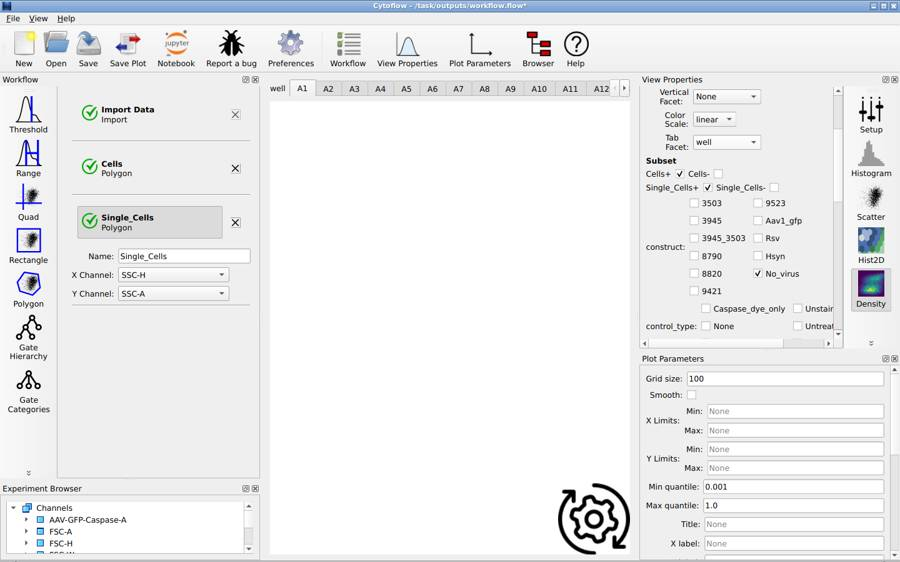
cu scroll 1050 400 up 10; sleep 1; cu click 1195 183; sleep 1; cu click 1180 183; sleep 2; cu screenshot /tmp/s1.png; ps -u cfapp -o rss --sort=-rss | sed -n 2p
{
"file_path": "/tmp/s1.png"
}/tmp/s1.png 2282488
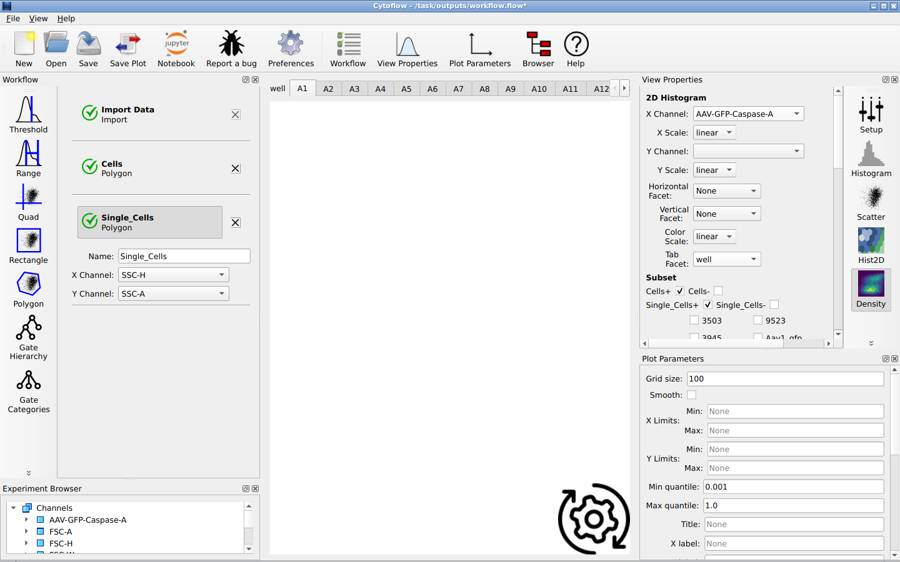
cu click 1195 243; sleep 1; cu click 1190 338; for i in $(seq 1 10); do sleep 1; ps -u cfapp -o rss --sort=-rss | sed -n 2p; done; cu screenshot /tmp/s1.png
{
"file_path": "/tmp/s1.png"
}2282488 2282488 2282488 2282488 2282488 2282632 2282632 2282632 2282632 2282632 /tmp/s1.png
export DISPLAY=:1; xdotool mousemove 999 141; xdotool click --repeat 30 --delay 80 1; sleep 1; cu screenshot /tmp/s1.png
{
"file_path": "/tmp/s1.png"
}/tmp/s1.png
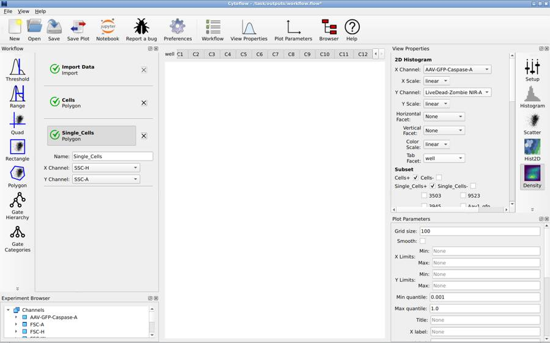
cu click 849 142; for i in $(seq 1 10); do sleep 1; ps -u cfapp -o rss --sort=-rss | sed -n 2p; done; cu screenshot /tmp/s1.png
{
"file_path": "/tmp/s1.png"
}2282632 2282632 2282632 2282632 2282632 2284600 2284600 2284600 2284600 2284600 /tmp/s1.png
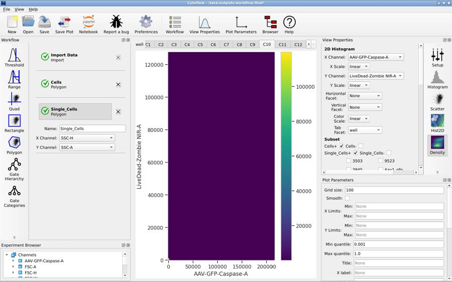
cu click 1140 213; sleep 1; cu click 1135 261; for i in $(seq 1 6); do sleep 1; ps -u cfapp -o rss --sort=-rss | sed -n 2p; done; cu click 1140 273; sleep 1; cu click 1135 321; for i in $(seq 1 8); do sleep 1; ps -u cfapp -o rss --sort=-rss | sed -n 2p; done; cu screenshot /tmp/s1.png
{
"file_path": "/tmp/s1.png"
}2284600 2284600 2284600 2284600 2284600 2283804 2283804 2283804 2283804 2283804 2283804 2285356 2285356 2285356 /tmp/s1.png
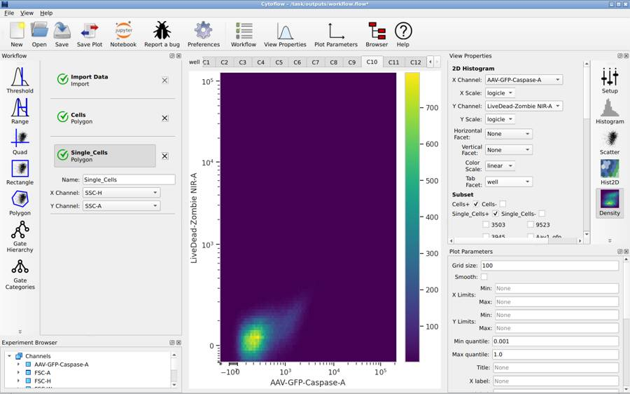
cu click 1140 379; sleep 1; cu click 1127 403; sleep 6; cu screenshot /tmp/c10.png; cu click 900 142; sleep 7; cu screenshot /tmp/c11.png; cu click 950 142; sleep 7; cu screenshot /tmp/c12.png
{
"file_path": "/tmp/c10.png"
}{
"file_path": "/tmp/c11.png"
}{
"file_path": "/tmp/c12.png"
}/tmp/c10.png /tmp/c11.png /tmp/c12.png
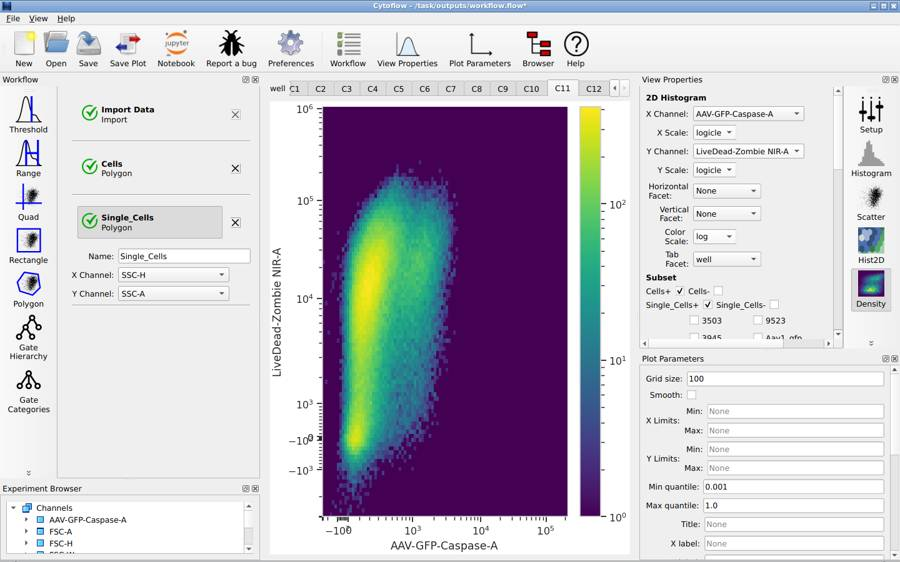
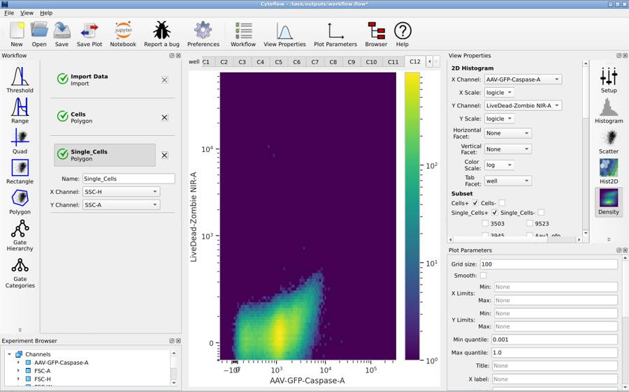
cu click 1270 659; cu type "-1000"; cu key Tab; cu type "1000000"; cu key Tab; cu type "-2000"; cu key Tab; cu type "1000000"; cu key Tab; sleep 12; cu screenshot /tmp/c12.png; cu click 721 142; sleep 8; cu screenshot /tmp/c7.png
{
"file_path": "/tmp/c12.png"
}{
"file_path": "/tmp/c7.png"
}/tmp/c12.png /tmp/c7.png
sleep 10; cu screenshot /tmp/c7.png
{
"file_path": "/tmp/c7.png"
}/tmp/c7.png
thinking
Control-well plots show Zombie NIR splitting into a negative and a bright cluster, with caspase as one broad band. I'm switching to per-well 1D histograms to set exact thresholds.
cu click 1393 255; sleep 3; cu screenshot /tmp/s1.png
{
"file_path": "/tmp/s1.png"
}/tmp/s1.png
cu click 1088 443; sleep 0.5; cu click 1133 465; sleep 0.5; cu click 1157 319; sleep 1; cu screenshot /tmp/s1.png
{
"file_path": "/tmp/s1.png"
}/tmp/s1.png
cu click 1125 295; sleep 1; cu scroll 1045 480 down 6; sleep 1; cu screenshot /tmp/s1.png
{
"file_path": "/tmp/s1.png"
}/tmp/s1.png
cu click 1213 227; sleep 0.4; cu click 1083 452; sleep 0.4; cu click 1083 480; sleep 0.4; cu click 1201 480; sleep 0.4; cu click 1113 723; sleep 0.4; cu scroll 1045 400 up 10; sleep 1; cu click 1135 213; sleep 1; cu click 1130 261; sleep 1; cu click 1190 183; sleep 1; cu click 1170 183; for i in $(seq 1 12); do sleep 1; ps -u cfapp -o rss --sort=-rss | sed -n 2p; done | sort -n | tail -1; cu screenshot /tmp/s1.png
{
"file_path": "/tmp/s1.png"
}2295540 /tmp/s1.png
cp /tmp/s1.png /tmp/hist_bl1_ctrl.png; cu click 1190 183; sleep 1; cu click 1170 278; sleep 10; cu screenshot /tmp/s1.png
{
"file_path": "/tmp/s1.png"
}/tmp/s1.png
cp /tmp/s1.png /tmp/hist_rl3_ctrl.png; cu click 1135 213; sleep 1; cu screenshot /tmp/s2.png
{
"file_path": "/tmp/s2.png"
}/tmp/s2.png
cu click 1130 166; sleep 4; cu click 1290 810; cu type "-500"; cu key Tab; cu type "4000"; cu key Tab; sleep 1; cu click 1113 723; sleep 12; cu screenshot /tmp/s1.png
{
"file_path": "/tmp/s1.png"
}/tmp/s1.png
cu click 1260 607; cu type "20000"; cu key Tab; sleep 14; cu screenshot /tmp/s1.png
{
"file_path": "/tmp/s1.png"
}/tmp/s1.png
cu click 1260 607; cu key ctrl+a; cu key BackSpace; cu key Tab; sleep 1; cu click 1290 840; cu key ctrl+a; cu type "300000"; cu key Tab; sleep 1; cu click 1135 213; sleep 1; cu click 1130 261; sleep 14; cu screenshot /tmp/s1.png
{
"file_path": "/tmp/s1.png"
}/tmp/s1.png
cu click 1135 213; sleep 1; cu click 1125 189; sleep 3; cu click 1290 810; cu key ctrl+a; cu type "30"; cu key Tab; sleep 14; cu screenshot /tmp/s1.png
{
"file_path": "/tmp/s1.png"
}/tmp/s1.png
cp /tmp/s1.png /tmp/hist_rl3_log_ctrl.png; cu scroll 1045 480 down 6; sleep 1; cu click 1083 452; sleep 0.4; cu click 1083 480; sleep 0.4; cu click 1201 452; sleep 14; cu screenshot /tmp/s1.png
{
"file_path": "/tmp/s1.png"
}/tmp/s1.png
sleep 5; cu screenshot /tmp/hist_rl3_log_c7_9.png; cu click 1393 462; sleep 4; cu screenshot /tmp/s1.png
{
"file_path": "/tmp/hist_rl3_log_c7_9.png"
}{
"file_path": "/tmp/s1.png"
}/tmp/hist_rl3_log_c7_9.png /tmp/s1.png
thinking
Stained wells are mostly Zombie-bright cells with few live ones, and C8 runs about three times brighter than C7 and C9. I'm going back to per-well density plots with tighter axis limits to set the boundaries and screen all 36 wells.
cu click 1213 251; sleep 1; cu click 1270 659; cu key ctrl+a; cu type "-500"; cu key Tab; cu key ctrl+a; cu type "200000"; cu key Tab; cu key ctrl+a; cu type "-500"; cu key Tab; cu key ctrl+a; cu type "500000"; cu key Tab; for i in $(seq 1 14); do sleep 1; ps -u cfapp -o rss --sort=-rss | sed -n 2p; done | sort -n | tail -1; cu screenshot /tmp/A1.png
{
"file_path": "/tmp/A1.png"
}2317076 /tmp/A1.png
python3 -c "import PIL; print(PIL.__version__)"; python3 -c "import matplotlib; print(matplotlib.__version__)"; sleep 3; cu screenshot /tmp/A1.png
{
"file_path": "/tmp/A1.png"
}10.2.0 3.6.3 /tmp/A1.png
mkdir -p /tmp/qc; cat > /tmp/cycle.sh <<'EOF'
#!/bin/bash
# cycle through the 36 well tabs, saving cropped plot screenshots: $1 = prefix, $2 = wait seconds
export DISPLAY=:1
P=$1; W=${2:-9}
# scroll tab bar fully left, select first tab
xdotool mousemove 984 141; xdotool click --repeat 40 --delay 60 1; sleep 0.5
cu click 483 142; sleep $W
i=0
for r in A B C; do for c in 1 2 3 4 5 6 7 8 9 10 11 12; do
sleep $W
scrot -o /tmp/qc/full.png
python3 - <<PY
from PIL import Image
im=Image.open('/tmp/qc/full.png').crop((432,128,1010,890)); im.save('/tmp/qc/${P}_${r}${c}.png')
PY
xdotool key Right
done; done
EOF
chmod +x /tmp/cycle.sh; cat > /tmp/montage.py <<'EOF'
import sys
from PIL import Image
p=sys.argv[1]; scale=float(sys.argv[2]) if len(sys.argv)>2 else 0.6
for r in 'ABC':
ims=[Image.open(f'/tmp/qc/{p}_{r}{c}.png') for c in range(1,13)]
w,h=ims[0].size; w2,h2=int(w*scale),int(h*scale)
sheet=Image.new('RGB',(w2*6,h2*2),'white')
for i,im in enumerate(ims):
sheet.paste(im.resize((w2,h2)),((i%6)*w2,(i//6)*h2))
sheet.save(f'/tmp/qc/{p}_row{r}.png')
EOF
/tmp/cycle.sh fl 8; python3 /tmp/montage.py fl 0.4; ls /tmp/qc | head -50{
"file_path": "/tmp/qc/fl_rowA.png"
}fl_A1.png fl_A10.png fl_A11.png fl_A12.png fl_A2.png fl_A3.png fl_A4.png fl_A5.png fl_A6.png fl_A7.png fl_A8.png fl_A9.png fl_B1.png fl_B10.png fl_B11.png fl_B12.png fl_B2.png fl_B3.png fl_B4.png fl_B5.png fl_B6.png fl_B7.png fl_B8.png fl_B9.png fl_C1.png fl_C10.png fl_C11.png fl_C12.png fl_C2.png fl_C3.png fl_C4.png fl_C5.png fl_C6.png fl_C7.png fl_C8.png fl_C9.png fl_rowA.png fl_rowB.png fl_rowC.png full.png
export DISPLAY=:1; xdotool mousemove 984 141; xdotool click --repeat 40 --delay 60 1; sleep 0.5; cu click 525 142; sleep 1; xdotool key Right; sleep 8; cu screenshot /tmp/s1.png
{
"file_path": "/tmp/s1.png"
}/tmp/s1.png
export DISPLAY=:1; xdotool mousemove 984 141; xdotool click --repeat 40 --delay 60 1; sleep 0.5; xdotool mousemove 999 141; xdotool click --repeat 11 --delay 100 1; sleep 1; scrot -o /tmp/full.png; python3 -c "
from PIL import Image
Image.open('/tmp/full.png').crop((432,128,1010,156)).resize((1156,56)).save('/tmp/tabs.png')"{
"file_path": "/tmp/tabs.png"
}(Bash completed with no output)
export DISPLAY=:1; xdotool mousemove 999 141; xdotool click --repeat 3 --delay 100 1; sleep 1; scrot -o /tmp/full.png; python3 -c "
from PIL import Image
Image.open('/tmp/full.png').crop((432,128,1010,156)).resize((1156,56)).save('/tmp/tabs.png')"{
"file_path": "/tmp/tabs.png"
}(Bash completed with no output)
cat > /tmp/gotab.sh <<'EOF'
#!/bin/bash
# gotab.sh WELL : select the tab for a well in the plot tab bar
export DISPLAY=:1
w=$1
declare -A G1=( [A1]=483 [A2]=525 [A3]=567 [A4]=608 [A5]=650 [A6]=692 [A7]=733 [A8]=775 [A9]=817 [A10]=862 [A11]=912 )
declare -A G2=( [A12]=525 [B1]=571 [B2]=613 [B3]=654 [B4]=696 [B5]=737 [B6]=779 [B7]=821 [B8]=862 [B9]=904 [B10]=950 )
declare -A G3=( [B11]=858 [B12]=905 [C1]=953 )
declare -A G4=( [C2]=513 [C3]=555 [C4]=596 [C5]=638 [C6]=680 [C7]=721 [C8]=763 [C9]=804 [C10]=849 [C11]=900 [C12]=950 )
left() { xdotool mousemove 984 141; xdotool click --repeat 40 --delay 50 1; sleep 0.3; }
right() { xdotool mousemove 999 141; xdotool click --repeat $1 --delay 80 1; sleep 0.3; }
if [ -n "${G1[$w]}" ]; then left; x=${G1[$w]}
elif [ -n "${G2[$w]}" ]; then left; right 11; x=${G2[$w]}
elif [ -n "${G3[$w]}" ]; then left; right 14; x=${G3[$w]}
else right 40; x=${G4[$w]}; fi
xdotool mousemove $x 142; xdotool click 1
EOF
chmod +x /tmp/gotab.sh
cat > /tmp/cycle.sh <<'EOF'
#!/bin/bash
# cycle.sh PREFIX WAIT [wells...]
export DISPLAY=:1
P=$1; W=${2:-9}; shift; shift
WELLS="$@"
[ -z "$WELLS" ] && WELLS=$(for r in A B C; do for c in 1 2 3 4 5 6 7 8 9 10 11 12; do echo $r$c; done; done)
for w in $WELLS; do
/tmp/gotab.sh $w
sleep $W
scrot -o /tmp/qc/full.png
python3 -c "
from PIL import Image
Image.open('/tmp/qc/full.png').crop((432,128,1010,890)).save('/tmp/qc/${P}_${w}.png')"
done
EOF
/tmp/cycle.sh fl 8; python3 /tmp/montage.py fl 0.4{
"file_path": "/tmp/qc/fl_rowA.png"
}(Bash completed with no output)
{
"file_path": "/tmp/qc/fl_rowB.png"
}{
"file_path": "/tmp/qc/fl_rowC.png"
}
{
"file_path": "/tmp/qc/fl_C12.png"
}{
"file_path": "/tmp/qc/fl_C9.png"
}{
"file_path": "/tmp/qc/fl_B2.png"
}{
"file_path": "/tmp/qc/fl_C11.png"
}cu click 1393 255; sleep 4; cu scroll 1045 400 up 10; sleep 1; cu click 1190 183; sleep 1; cu screenshot /tmp/s1.png
{
"file_path": "/tmp/s1.png"
}/tmp/s1.png
thinking
Gate boundaries are roughly set: live cells sit near zero on Zombie NIR and dead cells near 1e4–1e5, with caspase signal around 1.2e3. I'm checking the caspase histogram at higher resolution to place the positive cutoff.
cu click 1175 88; sleep 2; cu click 1290 810; cu key ctrl+a; cu type "50"; cu key Tab; cu key ctrl+a; cu type "30000"; cu key Tab; sleep 1; cu click 1113 723; sleep 1; cu scroll 1045 480 down 6; sleep 1; cu click 1083 452; sleep 0.4; cu click 1083 480; sleep 0.4; cu click 1201 452; sleep 15; cu screenshot /tmp/s1.png
{
"file_path": "/tmp/s1.png"
}/tmp/s1.png
sleep 6; cu screenshot /tmp/hist_bl1_log.png; cu click 46 252; sleep 3; cu screenshot /tmp/s1.png
{
"file_path": "/tmp/s1.png"
}/tmp/hist_bl1_log.png /tmp/s1.png
cu click 288 496; cu type "Live"; cu key Tab; sleep 1; cu scroll 1045 300 up 15; sleep 1; cu screenshot /tmp/s1.png
{
"file_path": "/tmp/s1.png"
}/tmp/s1.png
cu click 1088 289; sleep 0.4; cu click 1133 311; sleep 0.4; cu click 1213 448; sleep 0.4; cu click 1128 204; sleep 1; cu click 1125 252; sleep 1; cu click 265 526; sleep 1; cu screenshot /tmp/s2.png; cu click 250 621; for i in $(seq 1 10); do sleep 1; ps -u cfapp -o rss --sort=-rss | sed -n 2p; done | sort -n | tail -1; cu screenshot /tmp/s1.png
{
"file_path": "/tmp/s1.png"
}/tmp/s2.png 2329396 /tmp/s1.png
cu click 288 557; cu type "-100000"; cu key Tab; sleep 1; cu click 288 587; cu type "1000"; cu key Tab; for i in $(seq 1 15); do sleep 1; ps -u cfapp -o rss --sort=-rss | sed -n 2p; done | sort -n | tail -1; cu screenshot /tmp/s1.png
{
"file_path": "/tmp/s1.png"
}2444292 /tmp/s1.png
cu key ctrl+s; sleep 3; cu click 46 252; sleep 3; cu screenshot /tmp/s1.png
{
"file_path": "/tmp/s1.png"
}/tmp/s1.png
cu click 288 583; cu type "Caspase_pos"; cu key Tab; sleep 1; cu click 1088 289; sleep 0.4; cu click 1083 311; sleep 0.4; cu click 1133 332; sleep 0.4; cu click 1213 470; sleep 0.4; cu click 1128 204; sleep 1; cu click 1125 252; sleep 1; cu click 1150 238; sleep 1; cu click 1125 214; sleep 1; cu click 265 613; sleep 1; cu click 250 614; for i in $(seq 1 12); do sleep 1; ps -u cfapp -o rss --sort=-rss | sed -n 2p; done | sort -n | tail -1; cu screenshot /tmp/s1.png
{
"file_path": "/tmp/s1.png"
}2324388 /tmp/s1.png
cu click 288 644; cu type "600"; cu key Tab; sleep 1; cu click 288 674; cu type "2000000"; cu key Tab; for i in $(seq 1 15); do sleep 1; ps -u cfapp -o rss --sort=-rss | sed -n 2p; done | sort -n | tail -1; cu screenshot /tmp/s1.png
{
"file_path": "/tmp/s1.png"
}2326580 /tmp/s1.png
cu key ctrl+s; sleep 3; cu click 46 462; sleep 3; cu screenshot /tmp/s1.png
{
"file_path": "/tmp/s1.png"
}/tmp/s1.png
cu click 288 669; cu type "Late_apoptosis"; cu key Tab; sleep 1; cu click 1088 363; sleep 0.4; cu click 1133 406; sleep 0.4; cu click 1098 602; sleep 0.6; cu click 1140 204; sleep 1; cu click 1135 252; sleep 1; cu click 1140 256; sleep 1; cu click 1135 304; sleep 1; cu scroll 1045 450 down 3; sleep 1; cu screenshot /tmp/s1.png
{
"file_path": "/tmp/s1.png"
}/tmp/s1.png
cu click 1213 356; sleep 0.5; cu click 1255 628; cu key ctrl+a; cu type "100"; cu key Tab; cu click 1270 680; cu type "100"; cu key Tab; cu type "2000000"; cu key Tab; cu type "200"; cu key Tab; cu type "2000000"; cu key Tab; sleep 1; cu click 278 699; sleep 1; cu click 250 700; sleep 1; cu click 278 729; sleep 1; cu screenshot /tmp/s2.png; cu click 270 824; for i in $(seq 1 15); do sleep 1; ps -u cfapp -o rss --sort=-rss | sed -n 2p; done | sort -n | tail -1; cu screenshot /tmp/s1.png
{
"file_path": "/tmp/s1.png"
}/tmp/s2.png 2327672 /tmp/s1.png
cu click 278 729; sleep 1; cu screenshot /tmp/s1.png
{
"file_path": "/tmp/s1.png"
}/tmp/s1.png
cu click 270 706; sleep 2; cu scroll 1045 300 up 6; sleep 1; cu click 1140 290; sleep 1; cu screenshot /tmp/s2.png; cu click 1127 314; sleep 14; cu screenshot /tmp/s1.png
{
"file_path": "/tmp/s1.png"
}/tmp/s2.png /tmp/s1.png
python3 -c "
from PIL import Image
im=Image.open('/tmp/s1.png').crop((495,815,700,845)).resize((1640,240),Image.LANCZOS); im.save('/tmp/ticks.png')
im=Image.open('/tmp/s1.png').crop((490,520,515,835)).resize((100,1260),Image.LANCZOS); im.save('/tmp/ticksy.png')"(Bash completed with no output)
{
"file_path": "/tmp/ticks.png"
}{
"file_path": "/tmp/ticksy.png"
}export DISPLAY=:1; cu click 558 710; sleep 1.2; cu click 894 710; sleep 1.2; cu click 894 159; sleep 1.2; xdotool mousemove 558 159; sleep 0.5; xdotool click --repeat 2 --delay 120 1; sleep 15; cu screenshot /tmp/s1.png
{
"file_path": "/tmp/s1.png"
}/tmp/s1.png
export DISPLAY=:1; xdotool mousemove 558 711; sleep 0.5; xdotool click --repeat 2 --delay 120 1; sleep 18; cu screenshot /tmp/s1.png; ps -u cfapp -o rss --sort=-rss | sed -n 2p
{
"file_path": "/tmp/s1.png"
}/tmp/s1.png 2328804
sleep 5; cu key ctrl+s; sleep 4; ls -la /task/outputs; python3 - <<'EOF'
import re
t=open('/task/outputs/workflow.flow').read()
for m in re.finditer(r'operation: (&id\d+ )?!(polygon|range)[^\n]*\n((?: .*\n)+)', t):
print(m.group(2)); print(m.group(3)[:900])
EOFtotal 104
drwxrwsrwx 2 agent task 4096 Nov 10 19:20 .
drwxr-xr-x 4 root root 4096 Nov 5 00:07 ..
-rw-rw-r-- 1 cfapp task 96467 Nov 10 20:00 workflow.flow
polygon
name: Single_Cells
vertices:
- !!python/tuple
- 39543.97172894372
- 49278.01546241777
- !!python/tuple
- 85672.63214336142
- 49278.01546241777
- !!python/tuple
- 259297.44354788083
- 199820.61835943395
- !!python/tuple
- 957113.5766099705
- 934883.4146050207
- !!python/tuple
- 544437.5767467719
- 934883.4146050207
- !!python/tuple
- 168953.8278722633
- 281390.0096693058
- !!python/tuple
- 68080.23207352047
- 99739.15511678984
- !!python/tuple
- 68080.23207352047
- 99739.15511678984
xchannel: SSC-H
xscale: log
ychannel: SSC-A
yscale: loggrep -n -E "^ operation:|^ name:|^ low:|^ high:|^ channel:|xchannel|ychannel|xscale|yscale" /task/outputs/workflow.flow | head -60; grep -n -B2 -A22 "name: Late_apoptosis" /task/outputs/workflow.flow | head -60; date
323: operation: !import;4 1194: xchannel: FSC-A 1195: xscale: log 1196: ychannel: SSC-A 1197: yscale: log 1466: operation: *id001 1983: channel: AAV-GFP-Caspase-A 2283: operation: &id003 !polygon;1 2284: name: Single_Cells 2310: xchannel: SSC-H 2311: xscale: log 2312: ychannel: SSC-A 2313: yscale: log 2886: xchannel: '' 2888: xscale: linear 2889: ychannel: '' 2891: yscale: linear 3023: xchannel: AAV-GFP-Caspase-A 3025: xscale: logicle 3026: ychannel: LiveDead-Zombie NIR-A 3028: yscale: logicle 3538: operation: *id005 4386: operation: *id008 4956: xchannel: AAV-GFP-Caspase-A 4957: xscale: logicle 4958: ychannel: LiveDead-Zombie NIR-A 4959: yscale: logicle 5276: operation: *id010 4937- huescale: log 4938- op: &id010 !polygon;1 4939: name: Late_apoptosis 4940- vertices: 4941- - !!python/tuple 4942- - 603.91722120998 4943- - 1525.5796958850883 4944- - !!python/tuple 4945- - 1039508.876981908 4946- - 1525.5796958850883 4947- - !!python/tuple 4948- - 1039508.876981908 4949- - 1009279.5375577182 4950- - !!python/tuple 4951- - 603.91722120998 4952- - 1009279.5375577182 4953- - !!python/tuple 4954- - 603.91722120998 4955- - 1009279.5375577182 4956- xchannel: AAV-GFP-Caspase-A 4957- xscale: logicle 4958- ychannel: LiveDead-Zombie NIR-A 4959- yscale: logicle 4960- plot_params: !polygon-params;1 4961- alpha: 0.25 Tue Nov 10 20:00:20 UTC 2026
cu click 46 757; sleep 1.5; cu screenshot /tmp/s1.png
{
"file_path": "/tmp/s1.png"
}/tmp/s1.png
cu click 130 185; sleep 3; cu screenshot /tmp/s1.png
{
"file_path": "/tmp/s1.png"
}/tmp/s1.png
cu click 46 757; sleep 1.5; cu screenshot /tmp/s1.png
{
"file_path": "/tmp/s1.png"
}/tmp/s1.png
cu click 408 783; sleep 1; cu scroll 250 600 down 15; sleep 1; cu screenshot /tmp/s1.png
{
"file_path": "/tmp/s1.png"
}/tmp/s1.png
cu drag 421 510 640 510; sleep 2; cu screenshot /tmp/s1.png
{
"file_path": "/tmp/s1.png"
}/tmp/s1.png
cu click 390 569; cu type "All_events"; cu key Tab; sleep 0.5; cu click 255 628; sleep 1; cu screenshot /tmp/s2.png
{
"file_path": "/tmp/s2.png"
}/tmp/s2.png
cu click 205 577; sleep 1; cu click 403 770; sleep 3; cu scroll 350 600 down 15; sleep 1; cu screenshot /tmp/s2.png
{
"file_path": "/tmp/s2.png"
}/tmp/s2.png
for i in 1 2 3 4 5 6; do sleep 1.5; ps -u cfapp -o rss --sort=-rss | sed -n 2p; done; cu scroll 350 600 down 15; sleep 1; cu screenshot /tmp/s2.png
{
"file_path": "/tmp/s2.png"
}2327976 2327976 2327976 2327976 2327976 2327976 /tmp/s2.png
export DISPLAY=:1; xdotool mousemove 628 888; xdotool click --repeat 60 --delay 30 1; sleep 1; cu screenshot /tmp/s2.png
{
"file_path": "/tmp/s2.png"
}/tmp/s2.png
export DISPLAY=:1; xdotool mousemove 628 146; xdotool click --repeat 25 --delay 30 1; sleep 1; cu screenshot /tmp/s2.png
{
"file_path": "/tmp/s2.png"
}/tmp/s2.png
cat > /tmp/addstat.sh <<'EOF'
#!/bin/bash
# addstat.sh NAME [late] [casp] [cells] [single] [live]
export DISPLAY=:1
NAME=$1; shift
bottom() { xdotool mousemove 628 888; xdotool click --repeat 70 --delay 25 1; sleep 0.6; }
up28() { xdotool mousemove 628 146; xdotool click --repeat 28 --delay 25 1; sleep 0.6; }
cu click 46 700; sleep 3
bottom; up28
cu click 390 190; cu type "$NAME"; cu key Tab; sleep 0.8
cu click 255 250; sleep 0.8; cu key Escape; sleep 0.4; cu click 255 250; sleep 0.8
scrot -o /tmp/addstat_combo.png
EOF
chmod +x /tmp/addstat.sh; /tmp/addstat.sh Cells_n{
"file_path": "/tmp/addstat_combo.png"
}(Bash completed with no output)
cu click 390 167; cu type "Cells_n"; cu key Tab; sleep 0.8; cu click 265 197; sleep 1; cu screenshot /tmp/s2.png
{
"file_path": "/tmp/s2.png"
}/tmp/s2.png
cu click 201 389; sleep 1; cu click 255 227; sleep 1; cu screenshot /tmp/s2.png
{
"file_path": "/tmp/s2.png"
}/tmp/s2.png
export DISPLAY=:1; cu click 205 228; sleep 1; cu click 403 369; sleep 3; xdotool mousemove 628 888; xdotool click --repeat 70 --delay 25 1; sleep 0.8; cu screenshot /tmp/s2.png
{
"file_path": "/tmp/s2.png"
}/tmp/s2.png
sleep 3; cu screenshot /tmp/s2.png
{
"file_path": "/tmp/s2.png"
}/tmp/s2.png
cu click 168 573; sleep 5; cu screenshot /tmp/s2.png
cat > /tmp/addstat.sh <<'EOF'
#!/bin/bash
# addstat.sh NAME flags... flags among: late casp cells single live
export DISPLAY=:1
NAME=$1; shift
bottom() { xdotool mousemove 628 888; xdotool click --repeat 70 --delay 25 1; sleep 0.8; }
up28() { xdotool mousemove 628 146; xdotool click --repeat 28 --delay 25 1; sleep 0.8; }
cu click 46 700; sleep 3
bottom; up28
# fresh op (error row present): layout shifted -22
cu click 390 167; cu type "$NAME"; cu key Tab; sleep 0.8
cu click 265 197; sleep 1; cu click 201 389; sleep 1 # channel Time
cu click 255 227; sleep 1; cu click 205 228; sleep 1 # function Count
cu click 403 369; sleep 5 # group by Well -> op valid, error row disappears
bottom; up28
for f in "$@"; do
case $f in
late) cu click 232 466; sleep 5;;
casp) cu click 219 572; sleep 5;;
esac
done
bottom
for f in "$@"; do
case $f in
cells) cu click 168 573; sleep 5;;
live) cu click 164 595; sleep 5;;
single) cu click 213 645; sleep 5;;
esac
done
scrot -o /tmp/addstat_bottom.png
up28; scrot -o /tmp/addstat_top.png
EOF
echo ok{
"file_path": "/tmp/s2.png"
}/tmp/s2.png ok
/tmp/addstat.sh Single_n cells single; date
{
"file_path": "/tmp/addstat_bottom.png"
}{
"file_path": "/tmp/addstat_top.png"
}Tue Nov 10 20:05:25 UTC 2026
/tmp/addstat.sh Live_n cells single live; cp /tmp/addstat_bottom.png /tmp/live_b.png; cp /tmp/addstat_top.png /tmp/live_t.png; /tmp/addstat.sh Casp_n casp cells single live; cp /tmp/addstat_bottom.png /tmp/casp_b.png; cp /tmp/addstat_top.png /tmp/casp_t.png; /tmp/addstat.sh Late_n late cells single; cp /tmp/addstat_bottom.png /tmp/late_b.png; cp /tmp/addstat_top.png /tmp/late_t.png; python3 -c "
from PIL import Image
ims=[Image.open(f'/tmp/{n}_{s}.png').crop((95,130,640,890)) for n in ('live','casp','late') for s in ('t','b')]
sheet=Image.new('RGB',(545*6,760),'white')
for i,im in enumerate(ims): sheet.paste(im,(545*i,0))
sheet.resize((int(545*6*0.6),int(760*0.6))).save('/tmp/stats_check.png')"; cu key ctrl+s; sleep 3; date{
"file_path": "/tmp/stats_check.png"
}Tue Nov 10 20:07:48 UTC 2026
cu screenshot /tmp/s2.png
/tmp/s2.png
{
"file_path": "/tmp/s2.png"
}thinking
The scripted run for the last three statistics hit an error because one had the wrong settings. I'm dismissing the dialog, deleting the broken ones, and recreating them one at a time.
export DISPLAY=:1; cu click 925 513; sleep 1.5; cu screenshot /tmp/s2.png; xdotool mousemove 628 146; xdotool click --repeat 12 --delay 25 1; sleep 1; cu screenshot /tmp/s3.png
{
"file_path": "/tmp/s3.png"
}/tmp/s2.png /tmp/s3.png
cu click 582 363; sleep 2; cu screenshot /tmp/s3.png
{
"file_path": "/tmp/s3.png"
}/tmp/s3.png
cu click 582 843; sleep 2; cu screenshot /tmp/s3.png
{
"file_path": "/tmp/s3.png"
}/tmp/s3.png
export DISPLAY=:1; cu key ctrl+s; sleep 3; cu click 46 700; sleep 3; xdotool mousemove 628 888; xdotool click --repeat 70 --delay 25 1; sleep 0.8; xdotool mousemove 628 146; xdotool click --repeat 28 --delay 25 1; sleep 0.8; cu screenshot /tmp/s3.png
{
"file_path": "/tmp/s3.png"
}/tmp/s3.png
cat > /tmp/fillstat.sh <<'EOF'
#!/bin/bash
# fillstat.sh NAME flags... : fill in a freshly added stat op already scrolled to "bottom, up28"
export DISPLAY=:1
NAME=$1; shift
bottom() { xdotool mousemove 628 888; xdotool click --repeat 70 --delay 25 1; sleep 0.8; }
up28() { xdotool mousemove 628 146; xdotool click --repeat 28 --delay 25 1; sleep 0.8; }
cu click 390 167; cu type "$NAME"; cu key Tab; sleep 1
cu click 265 197; sleep 1; cu click 201 389; sleep 1.5
cu click 255 227; sleep 1; cu click 205 228; sleep 1.5
cu click 403 369; sleep 7
bottom; up28
scrot -o /tmp/fill_mid.png
for f in "$@"; do
case $f in
late) cu click 232 466; sleep 6;;
casp) cu click 219 572; sleep 6;;
esac
done
bottom
for f in "$@"; do
case $f in
cells) cu click 168 573; sleep 6;;
live) cu click 164 595; sleep 6;;
single) cu click 213 645; sleep 6;;
esac
done
scrot -o /tmp/addstat_bottom.png
up28; scrot -o /tmp/addstat_top.png
EOF
chmod +x /tmp/fillstat.sh; /tmp/fillstat.sh Live_n cells single live; python3 -c "
from PIL import Image
ims=[Image.open(f'/tmp/{n}.png').crop((95,130,640,890)) for n in ('addstat_top','addstat_bottom')]
sheet=Image.new('RGB',(545*2,760),'white')
for i,im in enumerate(ims): sheet.paste(im,(545*i,0))
sheet.save('/tmp/stats_check.png')"{
"file_path": "/tmp/stats_check.png"
}(Bash completed with no output)
cat > /tmp/newstat.sh <<'EOF'
#!/bin/bash
export DISPLAY=:1
sleep 4
cu click 46 700; sleep 6
xdotool mousemove 628 888; xdotool click --repeat 70 --delay 25 1; sleep 1
xdotool mousemove 628 146; xdotool click --repeat 28 --delay 25 1; sleep 1
scrot -o /tmp/new_top.png
python3 - <<'PY'
from PIL import Image
im=Image.open('/tmp/new_top.png').convert('RGB')
# check: Name field white box expected at y=167 and red Function label at y=227
r,g,b=im.getpixel((140,227)); print('function label px',(r,g,b))
print('name px', im.getpixel((400,167)))
PY
EOF
chmod +x /tmp/newstat.sh; /tmp/newstat.shfunction label px (255, 145, 145) name px (255, 255, 255)
/tmp/fillstat.sh Casp_n casp cells single live; python3 -c "
from PIL import Image
ims=[Image.open(f'/tmp/{n}.png').crop((95,130,640,890)) for n in ('addstat_top','addstat_bottom')]
sheet=Image.new('RGB',(545*2,760),'white')
for i,im in enumerate(ims): sheet.paste(im,(545*i,0))
sheet.save('/tmp/stats_check.png')"{
"file_path": "/tmp/stats_check.png"
}(Bash completed with no output)
/tmp/newstat.sh && /tmp/fillstat.sh Late_n late cells single; python3 -c "
from PIL import Image
ims=[Image.open(f'/tmp/{n}.png').crop((95,130,640,890)) for n in ('addstat_top','addstat_bottom')]
sheet=Image.new('RGB',(545*2,760),'white')
for i,im in enumerate(ims): sheet.paste(im,(545*i,0))
sheet.save('/tmp/stats_check.png')"; cu key ctrl+s; sleep 3; date; ls -la /task/outputs{
"file_path": "/tmp/stats_check.png"
}function label px (255, 145, 145) name px (255, 255, 255) Tue Nov 10 20:11:53 UTC 2026 total 228 drwxrwsrwx 2 agent task 4096 Nov 10 19:20 . drwxr-xr-x 4 root root 4096 Nov 5 00:07 .. -rw-rw-r-- 1 cfapp task 221672 Nov 10 20:11 workflow.flow
cu click 1393 549; sleep 1.5; cu screenshot /tmp/s3.png
{
"file_path": "/tmp/s3.png"
}/tmp/s3.png
cu click 1340 462; sleep 3; cu screenshot /tmp/s3.png
{
"file_path": "/tmp/s3.png"
}/tmp/s3.png
cu click 1393 549; sleep 1.5; cu click 1190 183; sleep 1; cu screenshot /tmp/s3.png
{
"file_path": "/tmp/s3.png"
}/tmp/s3.png
cu click 1150 184; sleep 2; cu screenshot /tmp/s3.png
{
"file_path": "/tmp/s3.png"
}/tmp/s3.png
cu click 1155 213; sleep 1; cu screenshot /tmp/s3.png
{
"file_path": "/tmp/s3.png"
}/tmp/s3.png
cu click 1138 213; sleep 1.5; cu click 1145 243; sleep 1; cu screenshot /tmp/s3.png
{
"file_path": "/tmp/s3.png"
}/tmp/s3.png
cu click 1135 219; sleep 4; cu screenshot /tmp/s3.png
{
"file_path": "/tmp/s3.png"
}/tmp/s3.png
mkdir -p /task/outputs/work; chmod 2777 /task/outputs/work; cu click 1218 394; sleep 2; cu screenshot /tmp/s3.png
{
"file_path": "/tmp/s3.png"
}/tmp/s3.png
cu click 715 589; cu paste "/task/outputs/work/All_events.csv"; sleep 0.5; cu key Return; sleep 3; ls -la /task/outputs/work; head -5 /task/outputs/work/All_events.csv; cu screenshot /tmp/s3.png
total 12 drwxrwsrwx 2 root task 4096 Nov 10 20:13 . drwxrwsrwx 3 agent task 4096 Nov 10 20:12 .. -rw-rw-r-- 1 cfapp task 693 Nov 10 20:13 All_events.csv well = A1,183353.0 well = A10,335810.0 well = A11,228556.0 well = A12,330844.0 well = A2,221770.0 /tmp/s3.png
cu click 1160 183; sleep 1; cu key Escape; sleep 0.5; cu key Down; sleep 4; cu screenshot /tmp/s3.png
{
"file_path": "/tmp/s3.png"
}/tmp/s3.png
cat > /tmp/export.sh <<'EOF'
#!/bin/bash
# export current table to /task/outputs/work/$1.csv
cu click 1218 394; sleep 2.5
cu click 715 589; cu paste "/task/outputs/work/$1.csv"; sleep 0.5; cu key Return; sleep 3
EOF
cat > /tmp/nextstat.sh <<'EOF'
#!/bin/bash
cu click 1160 183; sleep 1; cu key Escape; sleep 0.5; cu key Down; sleep 5
scrot -o /tmp/ns.png; python3 -c "
from PIL import Image
Image.open('/tmp/ns.png').crop((1030,170,1220,196)).save('/tmp/ns_$1.png')"
EOF
chmod +x /tmp/export.sh /tmp/nextstat.sh
/tmp/export.sh Casp_n
/tmp/nextstat.sh 1; /tmp/export.sh Cells_n
/tmp/nextstat.sh 2; /tmp/nextstat.sh 3; /tmp/export.sh Late_n
/tmp/nextstat.sh 4; /tmp/export.sh Live_n
/tmp/nextstat.sh 5; /tmp/export.sh Single_n
ls -la /task/outputs/work; python3 -c "
from PIL import Image
s=Image.new('RGB',(190,26*5))
for i in range(5): s.paste(Image.open(f'/tmp/ns_{i+1}.png'),(0,26*i))
s.save('/tmp/ns_all.png')"; cu key ctrl+s; sleep 2
python3 - <<'EOF'
import pandas as pd
d={}
for n in ['All_events','Cells_n','Single_n','Live_n','Casp_n','Late_n']:
s=pd.read_csv(f'/task/outputs/work/{n}.csv',header=None,names=['well',n])
s['well']=s.well.str.replace('well = ','').str.strip()
d[n]=s.set_index('well')[n]
df=pd.DataFrame(d).fillna(0).astype(int)
import re
df['k']=[ (w[0],int(w[1:])) for w in df.index]; df=df.sort_values('k').drop(columns='k')
df['%cells']=(100*df.Cells_n/df.All_events).round(1); df['%sing']=(100*df.Single_n/df.Cells_n).round(1); df['%live']=(100*df.Live_n/df.Single_n).round(1); df['%casp']=(100*df.Casp_n/df.Live_n).round(1); df['%late']=(100*df.Late_n/df.Single_n).round(1)
print(df.to_string())
EOFtotal 32
drwxrwsrwx 2 root task 4096 Nov 10 20:14 .
drwxrwsrwx 3 agent task 4096 Nov 10 20:12 ..
-rw-rw-r-- 1 cfapp task 693 Nov 10 20:13 All_events.csv
-rw-rw-r-- 1 cfapp task 616 Nov 10 20:13 Casp_n.csv
-rw-rw-r-- 1 cfapp task 693 Nov 10 20:13 Cells_n.csv
-rw-rw-r-- 1 cfapp task 666 Nov 10 20:14 Late_n.csv
-rw-rw-r-- 1 cfapp task 633 Nov 10 20:14 Live_n.csv
-rw-rw-r-- 1 cfapp task 691 Nov 10 20:14 Single_n.csv
All_events Cells_n Single_n Live_n Casp_n Late_n %cells %sing %live %casp %late
well
A1 183353 115308 105648 1278 321 79781 62.9 91.6 1.2 25.1 75.5
A2 221770 135851 120349 3636 954 89583 61.3 88.6 3.0 26.2 74.4
A3 222545 143581 130888 5730 2554 99263 64.5 91.2 4.4 44.6 75.8
A4 160440 105709 97196 2787 718 74717 65.9 91.9 2.9 25.8 76.9
A5 169911 107718 99458 5716 2089 73995 63.4 92.3 5.7 36.5 74.4
A6 230857 146124 131885 6093 1898 102036 63.3 90.3 4.6 31.2 77.4
A7 282723 172469 150060 7035 1684 112112 61.0 87.0 4.7 23.9 74.7
A8 236938 145208 128986 9711 3567 96804 61.3 88.8 7.5 36.7 75.1
A9 241833 154411 138608 5197 1419 106726 63.9 89.8 3.7 27.3 77.0
A10 335810 210036 185135 4462 1111 144081 62.5 88.1 2.4 24.9 77.8
A11 228556 136659 123854 6481 2319 94833 59.8 90.6 5.2 35.8 76.6
A12 330844 200176 176578 6673 2109 136324 60.5 88.2 3.8 31.6 77.2
B1 254845 151160 133714 7481 2488 98704 59.3 88.5 5.6 33.3 73.8
B2 319449 187856 162346 17940 7945 117895 58.8 86.4 11.1 44.3 72.6
B3 275473 168162 147320 12497 4919 110909 61.0 87.6 8.5 39.4 75.3
B4 219859 133067 120137 3702 888 88787 60.5 90.3 3.1 24.0 73.9
B5 225148 135833 123394 6296 2157 92493 60.3 90.8 5.1 34.3 75.0
B6 369018 223106 194488 13084 6181 148406 60.5 87.2 6.7 47.2 76.3
B7 186946 117751 108247 4143 1308 83772 63.0 91.9 3.8 31.6 77.4
B8 412353 257345 223356 11876 5068 170884 62.4 86.8 5.3 42.7 76.5
B9 219409 136397 123510 4769 1544 94157 62.2 90.6 3.9 32.4 76.2
B10 187472 115201 106515 3185 954 80051 61.4 92.5 3.0 30.0 75.2
B11 271438 172340 155712 7820 3144 121188 63.5 90.4 5.0 40.2 77.8
B12 286933 182138 164740 8985 3851 127380 63.5 90.4 5.5 42.9 77.3
C1 250794 167038 144096 2576 496 85391 66.6 86.3 1.8 19.3 59.3
C2 305451 203209 177144 6559 2146 127495 66.5 87.2 3.7 32.7 72.0
C3 418796 262059 224778 16358 7125 168426 62.6 85.8 7.3 43.6 74.9
C4 230134 148601 136173 2471 845 103807 64.6 91.6 1.8 34.2 76.2
C5 206789 135030 124056 3259 1246 96510 65.3 91.9 2.6 38.2 77.8
C6 189779 121551 113118 1836 769 90302 64.0 93.1 1.6 41.9 79.8
C7 317865 186995 156298 24494 15473 107059 58.8 83.6 15.7 63.2 68.5
C8 214991 121759 106322 4842 1742 78745 56.6 87.3 4.6 36.0 74.1
C9 222410 127473 109081 11665 5268 78072 57.3 85.6 10.7 45.2 71.6
C10 276619 166820 142800 142758 25448 10 60.3 85.6 100.0 17.8 0.0
C11 364071 208730 171006 21702 750 26569 57.3 81.9 12.7 3.5 15.5
C12 307442 181847 155053 154978 122683 54 59.1 85.3 100.0 79.2 0.0thinking
Counts for all six statistics look coherent, though C1's late-apoptosis fraction (59%) stands out against roughly 75% elsewhere. Next I'm running the per-well acquisition QC, checking time versus scatter across all 36 wells.
export DISPLAY=:1; xdotool mousemove 628 146; xdotool click --repeat 150 --delay 20 1; sleep 1; cu click 300 322; sleep 3; cu click 1393 462; sleep 4; cu screenshot /tmp/s3.png
{
"file_path": "/tmp/s3.png"
}/tmp/s3.png
cu click 1393 392; sleep 3; cu screenshot /tmp/s3.png
{
"file_path": "/tmp/s3.png"
}/tmp/s3.png
cu click 1168 416; sleep 1; cu screenshot /tmp/s3.png
{
"file_path": "/tmp/s3.png"
}/tmp/s3.png
cu click 1130 392; sleep 2; cu click 1195 183; sleep 1; cu screenshot /tmp/s3.png
{
"file_path": "/tmp/s3.png"
}/tmp/s3.png
cu click 1132 374; sleep 2; cu click 1195 243; sleep 1; cu screenshot /tmp/s3.png
{
"file_path": "/tmp/s3.png"
}/tmp/s3.png
cu click 1136 363; sleep 4; cu drag 640 510 421 510; sleep 2; cu click 1140 273; sleep 1; cu screenshot /tmp/s2.png;
{
"file_path": "/tmp/s2.png"
}/tmp/s2.png
cu click 1127 297; sleep 6; /tmp/cycle.sh tm 7; python3 /tmp/montage.py tm 0.4; date
{
"file_path": "/tmp/qc/tm_rowA.png"
}Tue Nov 10 20:22:52 UTC 2026
{
"file_path": "/tmp/qc/tm_rowB.png"
}{
"file_path": "/tmp/qc/tm_rowC.png"
}cu click 1393 185; sleep 3; cu screenshot /tmp/s3.png
{
"file_path": "/tmp/s3.png"
}/tmp/s3.png
cu click 1165 392; sleep 1; cu click 1130 368; sleep 2; cu click 1260 607; cu type "100"; cu key Tab; sleep 1; cu click 1190 183; sleep 1; cu screenshot /tmp/s2.png; cu click 1132 375; sleep 6; cu screenshot /tmp/s3.png
{
"file_path": "/tmp/s3.png"
}/tmp/s2.png /tmp/s3.png
/tmp/cycle.sh th 5; python3 /tmp/montage.py th 0.4; date; ps -u cfapp -o rss --sort=-rss | sed -n 2p
{
"file_path": "/tmp/qc/th_rowA.png"
}{
"file_path": "/tmp/qc/th_rowB.png"
}{
"file_path": "/tmp/qc/th_rowC.png"
}Tue Nov 10 20:29:34 UTC 2026 2334412
{
"file_path": "/tmp/qc/fl_rowC.png"
}{
"file_path": "/tmp/qc/fl_rowB.png"
}
cu click 1393 392; sleep 4; cu click 1195 183; sleep 1; cu key Escape; sleep 0.5; cu type "F"; sleep 5; cu click 1140 273; sleep 1; cu click 1130 249; sleep 4; cu click 1140 379; sleep 1; cu click 1127 403; sleep 8; cu screenshot /tmp/s3.png
{
"file_path": "/tmp/s3.png"
}/tmp/s3.png
cat > /tmp/cycle2.sh <<'EOF'
#!/bin/bash
# cycle2.sh PREFIX [wells...] : switch tab, wait until render is finished (no spinner + stable frame)
export DISPLAY=:1
P=$1; shift
WELLS="$@"
[ -z "$WELLS" ] && WELLS=$(for r in A B C; do for c in 1 2 3 4 5 6 7 8 9 10 11 12; do echo $r$c; done; done)
for w in $WELLS; do
/tmp/gotab.sh $w
sleep 3
python3 - "$P" "$w" <<'PY'
import sys, time, subprocess
from PIL import Image, ImageChops
p,w=sys.argv[1],sys.argv[2]
def grab():
subprocess.run(['scrot','-o','/tmp/qc/full.png'],check=True)
return Image.open('/tmp/qc/full.png').convert('RGB').crop((432,128,1010,890))
def gear(im):
box=im.crop((463,650,573,760)) # screen (895..1005, 778..888)
return sum(1 for (r,g,b) in box.getdata() if r<40 and g<40 and b<40)
prev=None; t0=time.time()
while time.time()-t0<40:
im=grab()
if gear(im)<800 and prev is not None and ImageChops.difference(im,prev).getbbox() is None:
break
prev=im; time.sleep(1.2)
im.save(f'/tmp/qc/{p}_{w}.png')
print(w, round(time.time()-t0,1), gear(im))
PY
done
EOF
chmod +x /tmp/cycle2.sh; /tmp/cycle2.sh sc | tr '\n' ' '; python3 /tmp/montage.py sc 0.4; date{
"file_path": "/tmp/qc/sc_rowA.png"
}{
"file_path": "/tmp/qc/sc_rowB.png"
}{
"file_path": "/tmp/qc/sc_rowC.png"
}A1 1.4 36 A2 3.9 36 A3 3.9 36 A4 3.9 36 A5 5.2 36 A6 3.9 36 A7 3.9 36 A8 3.9 36 A9 3.9 36 A10 5.2 36 A11 3.9 36 A12 5.2 36 B1 5.2 36 B2 5.2 36 B3 3.9 36 B4 3.9 36 B5 3.9 36 B6 5.2 36 B7 3.9 36 B8 3.9 36 B9 3.9 36 B10 5.2 36 B11 3.9 36 B12 5.2 36 C1 3.9 36 C2 3.9 36 C3 5.2 36 C4 3.9 36 C5 3.9 36 C6 3.9 36 C7 5.2 36 C8 5.2 36 C9 3.9 36 C10 5.2 36 C11 5.2 36 C12 3.9 36 Tue Nov 10 20:38:12 UTC 2026
cu click 1195 183; sleep 1; cu key Escape; sleep 0.5; cu type "A"; sleep 4; cu click 1195 243; sleep 1; cu key Escape; sleep 0.5; cu type "L"; sleep 4; cu click 1140 213; sleep 1; cu click 1135 261; sleep 4; cu click 1140 273; sleep 1; cu click 1135 321; sleep 4; cu click 1270 659; cu type "-500"; cu key Tab; cu type "1100000"; cu key Tab; cu type "-500"; cu key Tab; cu type "1100000"; cu key Tab; sleep 8; cu screenshot /tmp/s3.png
{
"file_path": "/tmp/s3.png"
}/tmp/s3.png
/tmp/cycle2.sh fx | tr '\n' ' '; python3 /tmp/montage.py fx 0.4; date
{
"file_path": "/tmp/qc/fx_rowA.png"
}{
"file_path": "/tmp/qc/fx_rowB.png"
}{
"file_path": "/tmp/qc/fx_rowC.png"
}A1 12.9 29 A2 5.2 29 A3 5.2 29 A4 5.2 29 A5 3.9 29 A6 3.9 29 A7 5.2 29 A8 3.9 29 A9 5.2 29 A10 5.2 29 A11 5.2 29 A12 5.2 29 B1 5.2 29 B2 5.2 29 B3 3.9 29 B4 5.2 24 B5 5.2 29 B6 5.2 29 B7 5.2 29 B8 5.2 29 B9 3.9 29 B10 3.9 29 B11 5.2 29 B12 3.9 29 C1 5.2 29 C2 5.2 29 C3 5.2 29 C4 5.2 24 C5 3.9 24 C6 5.2 24 C7 3.9 24 C8 5.2 24 C9 5.2 24 C10 5.2 24 C11 5.2 29 C12 5.2 24 Tue Nov 10 20:46:04 UTC 2026
cu click 1393 185; sleep 4; cu click 1190 183; sleep 1; cu key Escape; sleep 0.5; cu type "L"; sleep 4; cu click 1260 607; cu key ctrl+a; cu type "60"; cu key Tab; sleep 1; cu click 1290 810; cu key ctrl+a; cu type "500000"; cu key Tab; cu key ctrl+a; cu type "1100000"; cu key Tab; sleep 8; cu screenshot /tmp/s3.png
{
"file_path": "/tmp/s3.png"
}/tmp/s3.png
/tmp/cycle2.sh sat | tr '\n' ' '; python3 /tmp/montage.py sat 0.4; date
{
"file_path": "/tmp/qc/sat_rowA.png"
}{
"file_path": "/tmp/qc/sat_rowB.png"
}{
"file_path": "/tmp/qc/sat_rowC.png"
}A1 3.9 92 A2 3.9 92 A3 3.9 92 A4 5.2 92 A5 3.9 92 A6 3.9 92 A7 5.2 92 A8 3.9 92 A9 3.9 92 A10 3.9 92 A11 3.9 92 A12 5.2 92 B1 3.9 92 B2 3.9 92 B3 3.9 92 B4 3.9 92 B5 3.9 92 B6 3.9 92 B7 3.9 92 B8 5.2 92 B9 3.9 92 B10 3.9 92 B11 3.9 92 B12 3.9 92 C1 3.9 92 C2 3.9 92 C3 5.2 92 C4 3.9 92 C5 3.9 92 C6 3.9 92 C7 3.9 92 C8 3.9 92 C9 3.9 92 C10 3.9 92 C11 3.9 92 C12 3.9 92 Tue Nov 10 20:53:04 UTC 2026
cd /task/outputs && python3 - <<'EOF'
import pandas as pd
lay=pd.read_csv('/task/inputs/plate_layout.csv')
d={}
for n in ['All_events','Cells_n','Single_n','Live_n','Casp_n','Late_n']:
s=pd.read_csv(f'/task/outputs/work/{n}.csv',header=None,names=['well',n])
s['well']=s.well.str.replace('well = ','').str.strip()
d[n]=s.set_index('well')[n]
df=pd.DataFrame(d).reindex(lay.well).fillna(0).round().astype(int)
assert len(df)==36
pops=[('Cells','Cells_n','All_events','All_events'),('Single_Cells','Single_n','Cells','Cells_n'),('Live','Live_n','Single_Cells','Single_n'),('Caspase_pos','Casp_n','Live','Live_n'),('Late_apoptosis','Late_n','Single_Cells','Single_n')]
rows=[]
for _,r in lay.iterrows():
for pop,col,par,pcol in pops:
c=int(df.loc[r.well,col]); p=int(df.loc[r.well,pcol])
rows.append(dict(file=r.file,well=r.well,population=pop,count=c,parent_population=par,pct_of_parent=round(100*c/p,4) if p else 0.0))
out=pd.DataFrame(rows); out.to_csv('counts.csv',index=False); print(len(out)); print(out.head(6).to_string())
df.to_csv('/task/outputs/work/counts_wide.csv')
EOF
python3 -c "
from PIL import Image
ims=[Image.open(f'/tmp/qc/fx_{w}.png') for w in ('B4','B5','C8','A1')]
w,h=ims[0].size
s=Image.new('RGB',(w*4,h))
for i,im in enumerate(ims): s.paste(im,(w*i,0))
s.resize((int(w*4*0.62),int(h*0.62))).save('/tmp/fx4.png')"{
"file_path": "/tmp/fx4.png"
}180
file well population count parent_population pct_of_parent
0 Caspase_KO_RNAswap-rep2_caspase_Group_A1.fcs A1 Cells 115308 All_events 62.8885
1 Caspase_KO_RNAswap-rep2_caspase_Group_A1.fcs A1 Single_Cells 105648 Cells 91.6224
2 Caspase_KO_RNAswap-rep2_caspase_Group_A1.fcs A1 Live 1278 Single_Cells 1.2097
3 Caspase_KO_RNAswap-rep2_caspase_Group_A1.fcs A1 Caspase_pos 321 Live 25.1174
4 Caspase_KO_RNAswap-rep2_caspase_Group_A1.fcs A1 Late_apoptosis 79781 Single_Cells 75.5159
5 Caspase_KO_RNAswap-rep2_caspase_Group_A2.fcs A2 Cells 135851 All_events 61.2576cu key ctrl+s; sleep 4; ls -la /task/outputs/workflow.flow; python3 - <<'EOF'
import re
t=open('/task/outputs/workflow.flow').read()
for m in re.finditer(r'!(range|polygon|rectangle|threshold|channel-statistic)[^\n]*\n((?:\s+.*\n){1,6})', t):
blk=m.group(0)
if 'name:' in blk.split('\n')[1] or 'name:' in blk:
print(m.group(1), '|', ' '.join(x.strip() for x in blk.split('\n')[1:6] if any(k in x for k in ('name','low','high','channel:'))))
EOF
grep -n -A6 "operation: .*!range" /task/outputs/workflow.flow | head -30; grep -c "" /task/outputs/workflow.flow-rw-rw-r-- 1 cfapp task 230522 Nov 10 20:54 /task/outputs/workflow.flow polygon | name: Cells polygon | name: Single_Cells polygon | name: Late_apoptosis channel-statistic | channel: Time function_name: Count name: All_events channel-statistic | channel: Time function_name: Count name: Cells_n channel-statistic | channel: Time function_name: Count name: Single_n channel-statistic | channel: Time function_name: Count name: Live_n channel-statistic | channel: Time function_name: Count name: Casp_n channel-statistic | channel: Time function_name: Count name: Late_n 13196
date; grep -n "!range\|!threshold\|!rectangle" /task/outputs/workflow.flow | head; grep -n -B1 -A5 "name: Live$\|name: Caspase_pos$" /task/outputs/workflow.flow | head -40; cu screenshot /tmp/s3.png
Tue Nov 10 20:54:13 UTC 2026 3237: current_view: &id006 !range-view;2 3240: op: &id005 !range;1 4075: current_view: &id009 !range-view;2 4078: op: &id008 !range;1 3243- low: -100000.0 3244: name: Live 3245- plot_params: !histogram-params;4 3246- alpha: 0.5 3247- col_wrap: null 3248- density: false 3249- despine: true -- 4081- low: 600.0 4082: name: Caspase_pos 4083- plot_params: !histogram-params;4 4084- alpha: 0.5 4085- col_wrap: null 4086- density: false 4087- despine: true -- 4115- - !bool-subset;1 4116: name: Live 4117- selected_f: false 4118- selected_t: true 4119- values: [] 4120- - !bool-subset;1 4121- name: Single_Cells -- 4988- - !bool-subset;1 4989: name: Caspase_pos 4990- selected_f: false 4991- selected_t: false 4992- values: [] 4993- - !bool-subset;1 4994- name: Cells -- 4998- - !bool-subset;1 4999: name: Live 5000- selected_f: false 5001- selected_t: false 5002- values: [] 5003- - !bool-subset;1 5004- name: Single_Cells -- /tmp/s3.png
python3 - <<'EOF'
import pandas as pd, csv
lay=pd.read_csv('/task/inputs/plate_layout.csv')
w=pd.read_csv('/task/outputs/work/counts_wide.csv',index_col=0)
# time-profile observations read from the per-well Time histograms (100 bins, all events) and Time x SSC-A density plots in Cytoflow
tp={
'A1':'event rate steady (~1.9k events/bin of 100), mild decline at end','A2':'event rate steady (~2k/bin)','A3':'event rate steady (~2.3k/bin), one single-bin dip',
'A4':'event rate steady (~1.7k/bin), tail-off in last bins','A5':'event rate steady (~1.75k/bin)','A6':'event rate steady (~2.4k/bin), tail-off in last bins',
'A7':'event rate steady (~2.9k/bin) apart from one early burst (~4.8k in 1 bin)','A8':'event rate steady (~2.5k/bin)','A9':'event rate steady (~2.6k/bin), tail-off in last bins',
'A10':'event rate steady (~3.5k/bin), tail-off in last bins','A11':'event rate steady (~2.3k/bin), one single-bin dip','A12':'event rate steady (~3.5k/bin), tail-off in last bins',
'B1':'event rate steady (~2.7k/bin), one single-bin dip','B2':'event rate steady (~3.3k/bin), two single-bin dips','B3':'event rate steady (~2.9k/bin), one single-bin dip',
'B4':'event rate steady (~2.2k/bin)','B5':'event rate steady (~2.3k/bin)','B6':'event rate steady (~3.8k/bin)','B7':'event rate steady (~1.9k/bin)',
'B8':'event rate steady (~4.1k/bin) apart from one early burst (~8.7k in 1 bin)','B9':'event rate steady (~2.3k/bin), tail-off in last bins','B10':'event rate steady (~1.9k/bin), one single-bin dip',
'B11':'event rate steady (~2.9k/bin), tail-off in last bins','B12':'event rate steady (~3k/bin)',
'C3':'event rate steady (~4.3k/bin), a few single-bin dips','C4':'event rate steady (~2.3k/bin)','C5':'event rate steady (~2.1k/bin), tail-off in last bins','C6':'event rate steady (~2k/bin), tail-off in last bins',
'C7':'event rate ~3.4k/bin with about 4 single-bin dropouts (<5% of run)','C8':'event rate ~2.3k/bin with 1 single-bin dropout, tail-off in last bins','C9':'event rate ~2.3k/bin with 2-3 single-bin dips',
'C10':'event rate ~2.9k/bin with about 3 single-bin dips','C11':'event rate ~3.8k/bin with about 4 single-bin dips','C12':'acquisition continuous on Time x SSC-A (a few narrow gaps only)'}
rows=[]
for _,r in lay.iterrows():
x=w.loc[r.well]; n=int(x.All_events)
pc=100*x.Cells_n/n; ps=100*x.Single_n/x.Cells_n; pl=100*x.Live_n/x.Single_n; pk=100*x.Casp_n/x.Live_n; pa=100*x.Late_n/x.Single_n
base=f"{n} events; Cells {pc:.1f}% of events, singlets {ps:.1f}% of Cells, Live {pl:.1f}% and Late_apoptosis {pa:.1f}% of singlets, Caspase_pos {pk:.1f}% of Live"
if r.well=='C1':
u,cat='no','clog_or_interrupted_flow'
ev=(f"Time histogram (100 bins): almost no events in the first ~12% of the run, then bursts of ~5-8.5k events/bin separated by troughs of ~1k/bin for the whole acquisition (other wells: flat rate, bin-to-bin variation <~20%); Time x SSC-A shows the bursts as separate stripes. "
f"Populations shifted vs replicates C2/C3 and the rest of the plate: Late_apoptosis {pa:.1f}% of singlets (plate 68-80%), Live {pl:.1f}%, {100-pl-pa:.0f}% of singlets in neither gate (plate ~17-24%). {n} events.")
elif r.well=='C2':
u,cat='no','clog_or_interrupted_flow'
ev=(f"Time histogram (100 bins): no events in the first ~10% of the run, then rate oscillating between ~0.5k and ~5.5k events/bin up to ~40% of the run, a surge to ~6.7k/bin near mid-run, and only then a steady ~4k/bin; Time x SSC-A shows stripes in the first half. Unstable flow for about half of the acquisition (other wells: flat rate). "
f"Acquired directly after C1, which shows the same fault. {n} events; Live {pl:.1f}%, Late_apoptosis {pa:.1f}% of singlets.")
else:
u,cat='yes','ok'
ev=base+"; "+tp[r.well]
if r.well=='C10': ev+="; unstained as labelled: 99.97% of singlets Zombie NIR-negative, 10 events in Late_apoptosis"
if r.well=='C11': ev+="; Zombie-only as labelled: Zombie-negative and Zombie-bright populations resolved, BL1-A at unstained level (3.5% of Live above the caspase cutoff)"
if r.well=='C12': ev+="; CellEvent-only as labelled: 99.95% of singlets Zombie NIR-negative, BL1-A bimodal (negative ~200, positive ~1000)"
if r.well in ('C4','C5','C6'): ev+="; sparse BL1-A-bright (1e4-1e5) GFP tail present, as expected for AAV1-GFP"
rows.append(dict(file=r.file,well=r.well,usable=u,reason_category=cat,evidence=ev))
f=pd.DataFrame(rows); f.to_csv('flags.csv',index=False,quoting=csv.QUOTE_MINIMAL)
print(len(f), f.usable.value_counts().to_dict()); print(f[f.usable=='no'].evidence.to_string())
c=pd.read_csv('counts.csv'); print(c.shape, c.population.value_counts().to_dict(), c.pct_of_parent.between(0,100).all())
EOF36 {'yes': 34, 'no': 2}
24 Time histogram (100 bins): almost no events in...
25 Time histogram (100 bins): no events in the fi...
(180, 6) {'Cells': 36, 'Single_Cells': 36, 'Live': 36, 'Caspase_pos': 36, 'Late_apoptosis': 36} Truecu click 1290 810; cu key ctrl+a; cu key BackSpace; cu key Tab; cu key ctrl+a; cu key BackSpace; cu key Tab; sleep 1; cu click 1260 607; cu key ctrl+a; cu type "100"; cu key Tab; sleep 1; cu click 1190 183; sleep 1; cu key Escape; sleep 0.5; cu type "T"; sleep 6; /tmp/cycle2.sh t2 C1 C2 C3 C12 C7 B9 | tr '\n' ' '; python3 -c "
from PIL import Image
ims=[Image.open(f'/tmp/qc/t2_{w}.png') for w in ('C1','C2','C3','C12','C7','B9')]
w,h=ims[0].size
s=Image.new('RGB',(w*3,h*2))
for i,im in enumerate(ims): s.paste(im,(w*(i%3),h*(i//3)))
s.resize((int(w*3*0.75),int(h*2*0.75))).save('/tmp/t2.png')"{
"file_path": "/tmp/t2.png"
}C1 12.9 102 C2 3.9 103 C3 5.2 103 C12 3.9 103 C7 3.9 103 B9 3.9 103
python3 - <<'EOF'
import pandas as pd, csv
f=pd.read_csv('flags.csv'); w=pd.read_csv('work/counts_wide.csv',index_col=0)
w['live']=100*w.Live_n/w.Single_n; w['late']=100*w.Late_n/w.Single_n; w['neither']=100-w.live-w.late
st=w.drop(index=['C1','C2','C10','C11','C12'])
print(st.late.min().round(1), st.late.max().round(1), st.neither.min().round(1), st.neither.max().round(1), st.live.min().round(1), st.live.max().round(1))
def setev(well,ev): f.loc[f.well==well,'evidence']=ev
x=w.loc['C1']
setev('C1', f"Time histogram (100 bins, all {int(x.All_events)} events): no events until Time ~5000 of ~40000 (first ~12% of the run; other wells start at ~0), then bursts of ~5-8.4k events/bin separated by troughs of ~0.3-1.3k/bin for the entire acquisition, rate collapsing to <1.2k/bin in the last ~8% (other wells: flat rate, bin-to-bin variation <~20%). Time x SSC-A shows the bursts as separate stripes. Populations deviate from the plate: Late_apoptosis {x.late:.1f}% of singlets (other stained wells {st.late.min():.1f}-{st.late.max():.1f}%), {x.neither:.1f}% of singlets in neither Live nor Late_apoptosis (other stained wells {st.neither.min():.1f}-{st.neither.max():.1f}%), Live {x.live:.1f}%.")
x=w.loc['C2']
setev('C2', f"Time histogram (100 bins, all {int(x.All_events)} events): almost no events until Time ~5500 of ~40000 (first ~13% of the run), then the rate oscillates between ~0.4k and ~5.5k events/bin up to Time ~21000, surges to ~6.7k/bin at ~22000 and again to ~5.9k/bin at ~29000; a steady ~4k/bin is reached only for the last third. Flow is unstable for more than half of the acquisition (other wells: flat rate, bin-to-bin variation <~20%); Time x SSC-A shows stripes in the first half. Acquired directly after C1, which shows the same fault. Live {x.live:.1f}%, Late_apoptosis {x.late:.1f}% of singlets.")
e=f.loc[f.well=='C7','evidence'].iloc[0]
e=e.split('; event rate')[0]+"; event rate ~3.3k/bin with 2 single-bin dropouts to <0.4k (Time ~18500 and ~26500) and ~5 dips to ~2k between Time 18000-30000, each followed by recovery (<10% of bins affected); Live % is the highest of the three no-virus replicates"
setev('C7',e)
e=f.loc[f.well=='C12','evidence'].iloc[0].replace('acquisition continuous on Time x SSC-A (a few narrow gaps only)','event rate steady (~3.2k/bin), two single-bin dips to ~2.2-2.5k late in the run')
setev('C12',e)
e=f.loc[f.well=='C3','evidence'].iloc[0].replace('event rate steady (~4.3k/bin), a few single-bin dips','event rate steady (~4.3k/bin) after a short ramp-up, one single-bin dip to ~2.7k')
setev('C3',e)
e=f.loc[f.well=='B9','evidence'].iloc[0].replace('tail-off in last bins','rate falls to ~0.4k/bin only in the last ~4% of the run')
setev('B9',e)
assert ((f.usable=='yes')==(f.reason_category=='ok')).all() and len(f)==36
f.to_csv('flags.csv',index=False)
print(f.loc[f.well.isin(['C1','C7','A1']),'evidence'].to_list())
EOF68.5 79.8 15.8 23.3 1.2 15.7 ['183353 events; Cells 62.9% of events, singlets 91.6% of Cells, Live 1.2% and Late_apoptosis 75.5% of singlets, Caspase_pos 25.1% of Live; event rate steady (~1.9k events/bin of 100), mild decline at end', 'Time histogram (100 bins, all 250794 events): no events until Time ~5000 of ~40000 (first ~12% of the run; other wells start at ~0), then bursts of ~5-8.4k events/bin separated by troughs of ~0.3-1.3k/bin for the entire acquisition, rate collapsing to <1.2k/bin in the last ~8% (other wells: flat rate, bin-to-bin variation <~20%). Time x SSC-A shows the bursts as separate stripes. Populations deviate from the plate: Late_apoptosis 59.3% of singlets (other stained wells 68.5-79.8%), 39.0% of singlets in neither Live nor Late_apoptosis (other stained wells 15.8-23.3%), Live 1.8%.', '317865 events; Cells 58.8% of events, singlets 83.6% of Cells, Live 15.7% and Late_apoptosis 68.5% of singlets, Caspase_pos 63.2% of Live; event rate ~3.3k/bin with 2 single-bin dropouts to <0.4k (Time ~18500 and ~26500) and ~5 dips to ~2k between Time 18000-30000, each followed by recovery (<10% of bins affected); Live % is the highest of the three no-virus replicates']
{
"file_path": "/task/outputs/notes.md",
"content": "# Gating notes \u2014 caspase-3/7 + Zombie NIR plate (36 wells, Cytoflow 1.3.2)\n\nOne gate set, raw uncompensated data, full event set (9.4 M events). Counts are Channel Statistic \"Count\" tables grouped by `well`, each with the full ancestor chain as subset, exported from the Table view (`work/*.csv`).\n\n## Gates\n| Population | Operation | Boundary | Why |\n|---|---|---|---|\n| Cells | Polygon, FSC-A \u00d7 SSC-A (log/log) | 7 vertices: (4.6e4, 8.8e4), (8.9e4, 5.2e4), (2.8e5, 8.8e4), (8.0e5, 3.0e5), (8.9e5, 8.8e5), (1.9e5, 9.0e5), (8.1e4, 4.6e5) | Encloses the cell cluster (centre FSC-A \u2248 1.3e5, SSC-A \u2248 2e5). Lower-left edge cuts the low-FSC-A debris trail; top/right edges stay below the detector maximum so events piled at the SSC-A ceiling (present in every well) are excluded. 57\u201367 % of events per well. |\n| Single_Cells | Polygon, SSC-H \u00d7 SSC-A (log/log), drawn on Cells | Band along the diagonal from (4e4, 4.9e4) to (9.6e5, 9.3e5); upper edge through (6.8e4, 1.0e5), (1.7e5, 2.8e5), (5.4e5, 9.3e5) | Keeps the diagonal singlet band; the upper edge removes the shoulder with SSC-A high relative to SSC-H. 82\u201393 % of Cells. |\n| Live | Range, RL3-A \u2212100 000 \u2026 1 000, drawn on singlets | Upper edge 1 000 | In C10 (unstained) and C12 (CellEvent only) the RL3-A population ends below ~500; in C11 (Zombie only) and C7\u2013C9 the valley between Zombie-negative and Zombie-bright lies at ~1 000\u20131 500. Lower bound far below zero so negative values are kept. C10/C12: >99.9 % Live; C11: 12.7 %. |\n| Caspase_pos | Range, BL1-A 600 \u2026 2 000 000, drawn on Live | Lower edge 600 | Live cells of C7\u2013C9 and all cells of C12 are bimodal on BL1-A (negative \u2248 200, positive \u2248 1 000); 600 sits just right of the valley. Not set on C4\u2013C6. |\n| Late_apoptosis | Polygon, BL1-A \u00d7 RL3-A (logicle), drawn on singlets | Box BL1-A 604 \u2026 1.04e6, RL3-A 1 526 \u2026 1.01e6 | Left edge = caspase cutoff; lower edge just above the Live edge (C11 valley), so RL3-A 1 000\u20131 526 is the unreported intermediate band. Reaches the top of both axes. C10: 10 events; C12: 54 events. |\n\n## Deviations from `gating_strategy.md`\n- Live and Caspase_pos are Range gates rather than Rectangles (the permitted equivalent). The Rectangle gate's plot repeatedly killed Cytoflow's worker process (out of memory).\n- For the same memory reason, no plot of all 36 wells pooled could be drawn. Gates were drawn on the no-virus wells (C7\u2013C12) and then checked well by well in per-well tabbed density plots.\n\n## Things to know before using the numbers\n- **Caspase cutoff has real background.** Negative and positive BL1-A peaks overlap. With the cutoff at 600, 3.5 % of Live cells in C11 (no CellEvent) and 17.8 % of all singlets in C10 (unstained) count as positive, and 15.5 % of C11 singlets fall in Late_apoptosis. Moving the cutoff changes Caspase_pos % substantially; treat it as relative between wells.\n- **C4\u2013C6:** BL1-A contains GFP, so Caspase_pos and Late_apoptosis there are not caspase-specific.\n- **C10/C12** carry no Zombie NIR, so their \"Live\" is simply everything; C11 carries no CellEvent.\n- Cultures are mostly dead: Live is 1\u201316 % of singlets, so Caspase_pos rests on 1 300\u201324 500 Live events per well.\n\n## Flags\n- **C1, C2 \u2014 not usable (clog_or_interrupted_flow).** No events for the first ~12 % of the run, then bursts and troughs (C1 throughout; C2 for more than half). C1's populations are also shifted (Late 59 % vs 68\u201380 %).\n- All other wells judged usable. Brief single-bin dropouts occur in several wells, most in C7 (about 7 of 100 time bins); C7 was kept but has the highest Live % of its triplicate, so it is the next one to doubt.\n- **Not checked quantitatively:** detector saturation. Density plots show a thin line of events at the RL3-A / SSC-A maximum in every well (longest in B4 and C8) but I could not get a per-well count, so no well is flagged for saturation. FlowClean was not used.\n"
}File created successfully at: /task/outputs/notes.md (file state is current in your context — no need to Read it back)
cu key ctrl+s; sleep 4; ls -la --time-style=full-iso /task/outputs /task/outputs/work | cut -c1-120; date; cu screenshot /tmp/s3.png; wc -w /task/outputs/notes.md
/task/outputs: total 272 drwxrwsrwx 3 agent task 4096 2026-11-10 20:57:12.219680395 +0000 . drwxr-xr-x 4 root root 4096 2026-11-05 00:07:08.902400435 +0000 .. -rw-r--r-- 1 root task 14840 2026-11-10 20:53:19.966908271 +0000 counts.csv -rw-r--r-- 1 root task 10478 2026-11-10 20:56:49.999113742 +0000 flags.csv -rw-r--r-- 1 root task 3912 2026-11-10 20:57:12.219680395 +0000 notes.md drwxrwsrwx 2 root task 4096 2026-11-10 20:53:19.966908271 +0000 work -rw-rw-r-- 1 cfapp task 230496 2026-11-10 20:57:13.359680395 +0000 workflow.flow /task/outputs/work: total 36 drwxrwsrwx 2 root task 4096 2026-11-10 20:53:19.966908271 +0000 . drwxrwsrwx 3 agent task 4096 2026-11-10 20:57:12.219680395 +0000 .. -rw-rw-r-- 1 cfapp task 693 2026-11-10 20:13:05.796994009 +0000 All_events.csv -rw-rw-r-- 1 cfapp task 616 2026-11-10 20:13:42.166020462 +0000 Casp_n.csv -rw-rw-r-- 1 cfapp task 693 2026-11-10 20:13:56.496650851 +0000 Cells_n.csv -rw-rw-r-- 1 cfapp task 666 2026-11-10 20:14:17.588078103 +0000 Late_n.csv -rw-rw-r-- 1 cfapp task 633 2026-11-10 20:14:31.917327437 +0000 Live_n.csv -rw-rw-r-- 1 cfapp task 691 2026-11-10 20:14:46.246825612 +0000 Single_n.csv -rw-r--r-- 1 root task 1517 2026-11-10 20:53:19.968573677 +0000 counts_wide.csv Tue Nov 10 20:57:17 UTC 2026 /tmp/s3.png 675 /task/outputs/notes.md
cu click 1190 183; sleep 1; cu key Escape; sleep 0.5; cu type "L"; sleep 4; cu click 1135 213; sleep 1; cu click 1127 237; sleep 4; cu click 1290 810; cu key ctrl+a; cu type "20000"; cu key Tab; cu key ctrl+a; cu type "1100000"; cu key Tab; sleep 2; /tmp/cycle2.sh s2 | tr '\n' ' '; python3 /tmp/montage.py s2 0.4; date
{
"file_path": "/tmp/qc/s2_rowA.png"
}{
"file_path": "/tmp/qc/s2_rowB.png"
}{
"file_path": "/tmp/qc/s2_rowC.png"
}A1 12.9 43 A2 3.9 43 A3 5.2 43 A4 3.9 43 A5 3.9 43 A6 3.9 43 A7 3.9 43 A8 3.9 43 A9 3.9 43 A10 3.9 43 A11 3.9 43 A12 3.9 43 B1 3.9 43 B2 3.9 43 B3 3.9 43 B4 3.9 43 B5 3.9 43 B6 3.9 43 B7 3.9 43 B8 3.9 43 B9 3.9 43 B10 3.9 43 B11 5.2 43 B12 3.9 43 C1 3.9 43 C2 3.9 43 C3 3.9 43 C4 5.2 43 C5 3.9 43 C6 3.9 43 C7 5.2 43 C8 5.2 43 C9 3.9 43 C10 3.9 43 C11 3.9 43 C12 3.9 43 Tue Nov 10 21:04:07 UTC 2026
python3 - <<'EOF'
p='notes.md'; t=open(p).read()
old=t[t.index('- **Not checked quantitatively:**'):]
new=("- **Saturation:** none flagged. Per-well RL3-A histograms (log axis, 2e4 to 1.1e6) fall off smoothly with no pile-up bar at the detector maximum in any well. "
"Events at the SSC-A ceiling occur in every well at a similar level and are excluded by the Cells gate. BL1-A was checked only by eye on the density plots (no edge line); I did not get a per-well count.\n"
"- FlowClean was not used.\n")
t=t.replace(old,new); open(p,'w').write(t)
import pandas as pd
f=pd.read_csv('flags.csv'); c=pd.read_csv('counts.csv')
print(f.shape, list(f.columns), f.reason_category.value_counts().to_dict(), f.evidence.isna().sum())
print(c.shape, list(c.columns), c.dtypes.to_dict())
print(open(p).read()[-900:])
EOF
cu key ctrl+s; sleep 4; ls -la --time-style=+%T /task/outputs; grep -c "name: Cells$\|name: Single_Cells$\|name: Live$\|name: Caspase_pos$\|name: Late_apoptosis$" workflow.flow; wc -w notes.md(36, 5) ['file', 'well', 'usable', 'reason_category', 'evidence'] {'ok': 34, 'clog_or_interrupted_flow': 2} 0
(180, 6) ['file', 'well', 'population', 'count', 'parent_population', 'pct_of_parent'] {'file': dtype('O'), 'well': dtype('O'), 'population': dtype('O'), 'count': dtype('int64'), 'parent_population': dtype('O'), 'pct_of_parent': dtype('float64')}
% of singlets, so Caspase_pos rests on 1 300–24 500 Live events per well.
## Flags
- **C1, C2 — not usable (clog_or_interrupted_flow).** No events for the first ~12 % of the run, then bursts and troughs (C1 throughout; C2 for more than half). C1's populations are also shifted (Late 59 % vs 68–80 %).
- All other wells judged usable. Brief single-bin dropouts occur in several wells, most in C7 (about 7 of 100 time bins); C7 was kept but has the highest Live % of its triplicate, so it is the next one to doubt.
- **Saturation:** none flagged. Per-well RL3-A histograms (log axis, 2e4 to 1.1e6) fall off smoothly with no pile-up bar at the detector maximum in any well. Events at the SSC-A ceiling occur in every well at a similar level and are excluded by the Cells gate. BL1-A was checked only by eye on the density plots (no edge line); I did not get a per-well count.
- FlowClean was not used.
total 272
drwxrwsrwx 3 agent task 4096 20:57:12 .
drwxr-xr-x 4 root root 4096 00:07:08 ..
-rw-r--r-- 1 root task 14840 20:53:19 counts.csv
-rw-r--r-- 1 root task 10478 20:56:49 flags.csv
-rw-r--r-- 1 root task 4036 21:04:22 notes.md
drwxrwsrwx 2 root task 4096 20:53:19 work
-rw-rw-r-- 1 cfapp task 230519 21:04:22 workflow.flow
66
699 notes.mdAll 36 wells are gated with one gate set in Cytoflow, and the four deliverables are written. Two wells are flagged unusable (C1 and C2, interrupted flow); the other 34 are marked usable. ## Gates | Population | Operation | Boundary | |---|---|---| | `Cells` | Polygon, FSC-A × SSC-A | around the cell cluster, debris and SSC-A ceiling excluded | | `Single_Cells` | Polygon, SSC-H × SSC-A | diagonal band | | `Live` | Range on Zombie NIR | ≤ 1 000 | | `Caspase_pos` | Range on caspase channel | ≥ 600 | | `Late_apoptosis` | Polygon, caspase × Zombie NIR | caspase ≥ 604 and Zombie NIR ≥ 1 526 | Typical stained wells come out at about 57–67 % Cells, 82–93 % singlets, 1–16 % Live, and 68–80 % Late_apoptosis. ## Flags - **C1 – not usable (clog_or_interrupted_flow).** No events for the first ~12 % of the run, then bursts and troughs throughout. Its populations are also shifted: Late_apoptosis is 59 % of singlets against 68–80 % elsewhere. - **C2 – not usable (clog_or_interrupted_flow).** No events for the first ~13 % of the run, then unstable flow for more than half of it. This is the more debatable call: the last third is steady and its percentages look normal. - **C7 – kept, but the next one to doubt.** About 7 of 100 time bins show brief dropouts, and it has the highest Live % of the no-virus triplicate. - **Saturation:** no well flagged. Zombie NIR shows no pile-up at the detector maximum in any well; the caspase channel was only checked by eye. ## Things to know before using the numbers - **The caspase cutoff has real background.** Negative and positive peaks overlap. At 600, 3.5 % of Live cells in the Zombie-only control (C11) and 17.8 % of the unstained control (C10) count as positive, and 15.5 % of C11 singlets fall in Late_apoptosis. Treat Caspase_pos % as relative between wells. - **Deviations from the gating strategy.** Live and Caspase_pos are Range gates (the permitted equivalent), because the Rectangle gate's plot repeatedly crashed Cytoflow with out-of-memory. For the same reason the gates were drawn on the no-virus wells (C7–C12) and then checked well by well, not on all wells pooled. - **Time-profile evidence is read off plots.** The per-well event-rate figures in `flags.csv` are approximate readings from Cytoflow histograms, not exported numbers. - **`workflow.flow` contains extras.** Besides the five gates it holds six Channel Statistic steps used for the counts. Files are in `/task/outputs/`: - `workflow.flow` - `counts.csv` - `flags.csv` - `notes.md` - `work/` (intermediate exports)